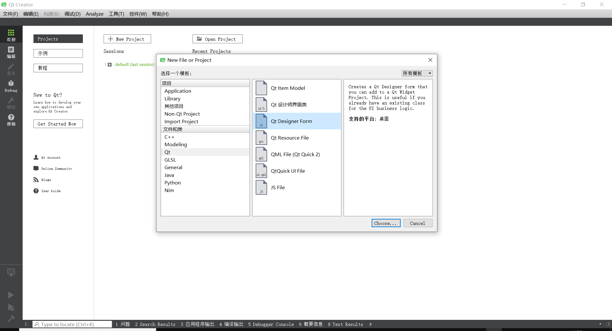
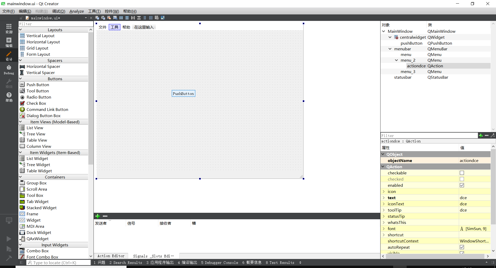
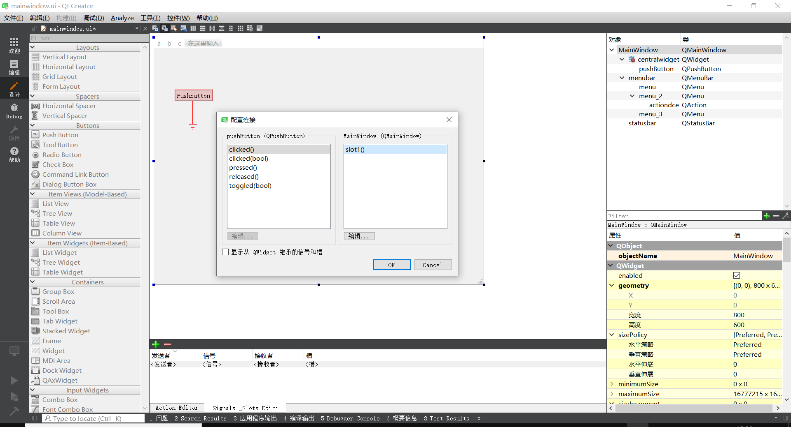
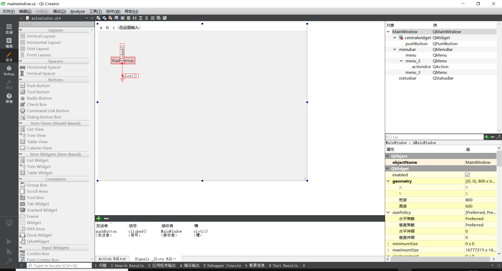
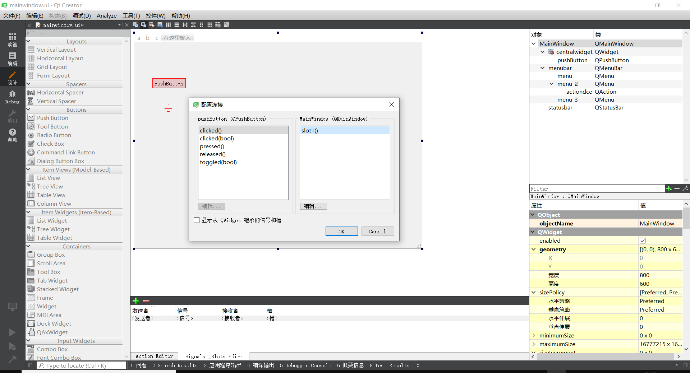
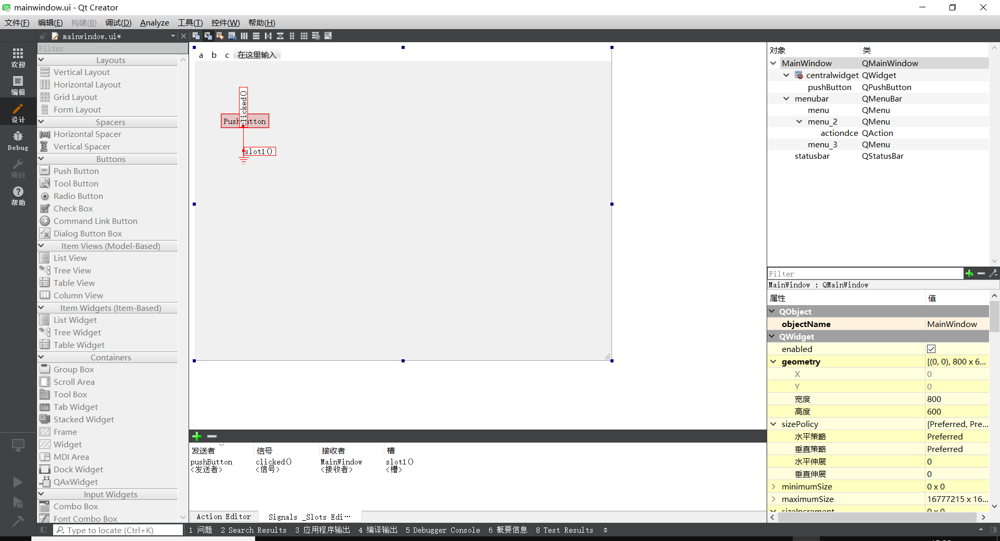
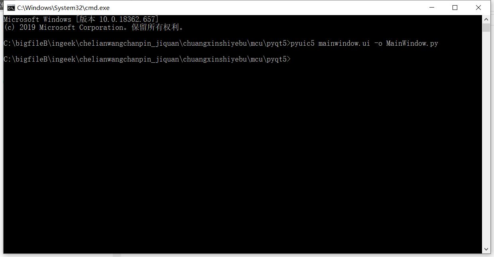
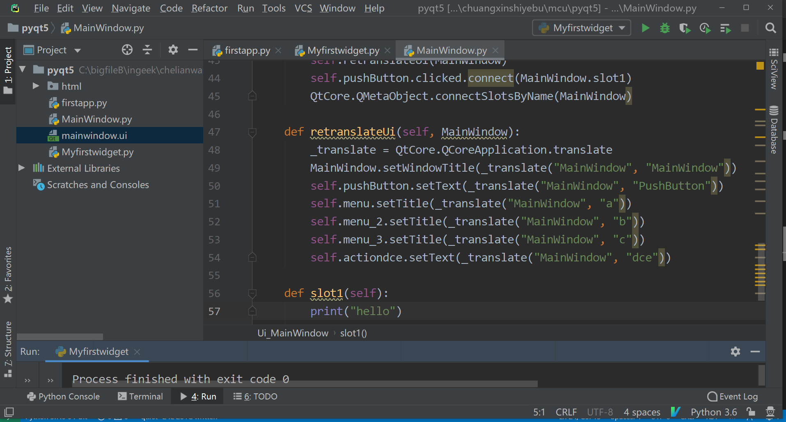
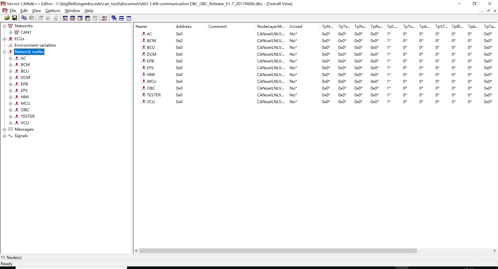
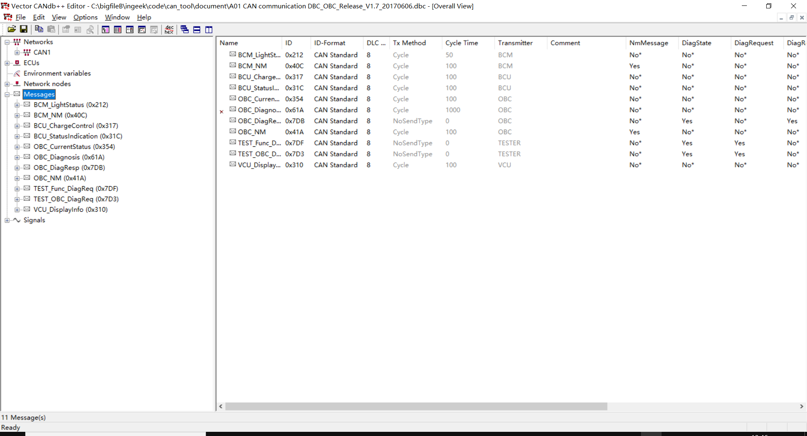

Welcome to sphinx’s documentation!¶
1. pyqt5¶
pip install sphinx pip install pdfrw pip install rst2pdf pip install anaconda
extensions = [
'sphinx.ext.autodoc',
'rst2pdf.pdfbuilder'
]
https://blog.csdn.net/weixin_34195546/article/details/91902501
https://www.hankcs.com/program/python/the-use-of-rst2pdf-to-expand-sphinx-to-generate-pdf.html
https://www.sphinx-doc.org/en/master/usage/quickstart.html
http://www.pythondoc.com/sphinx/rest.html#rst-tables
https://docutils.sourceforge.io/docs/ref/rst/restructuredtext.html#grid-tables
https://pypi.org/project/PyQt5/
https://www.runoob.com/python/python-chinese-encoding.html
1.1. Creating a window¶
import sys
from PyQt5.QtWidgets import QApplication, QWidget
app = QApplication(sys.argv)
window = QWidget()
window.show() # IMPORTANT!!!!! Windows are hidden by default.
# Start the event loop.
app.exec_()
import sys
from PyQt5.QtWidgets import QApplication, QMainWindow
app = QApplication(sys.argv)
window = QMainWindow()
window.show() # IMPORTANT!!!!! Windows are hidden by default.
# Start the event loop.
app.exec_()
1.2. My first widget¶
import sys
from PyQt5.QtWidgets import QApplication, QLabel, QMainWindow
from PyQt5.QtCore import Qt
# Subclass QMainWindow to customise your application's main window
class MainWindow(QMainWindow):
def __init__(self, *args, **kwargs):
super(MainWindow, self).__init__(*args, **kwargs)
self.setWindowTitle("My Awesome App")
label = QLabel("This is a PyQt5 window!")
# The `Qt` namespace has a lot of attributes to customise
# widgets. See: http://doc.qt.io/qt-5/qt.html
label.setAlignment(Qt.AlignCenter)
# Set the central widget of the Window. Widget will expand
# to take up all the space in the window by default.
self.setCentralWidget(label)
app = QApplication(sys.argv)
window = MainWindow()
window.show()
app.exec_()
1.3. First steps with Qt Designer¶
Using your generated .ui file
load into into a class using the .loadUI() method
convert it to Python using the pyuic5 tool.
1.4. Loading the .ui file directly¶
import sys
from PyQt5 import QtWidgets, uic
app = QtWidgets.QApplication(sys.argv)
window = uic.loadUi("mainwindow.ui")
window.show()
app.exec()
import sys
from PyQt5 import QtCore, QtGui, QtWidgets
from PyQt5 import uic
class MainWindow(QtWidgets.QMainWindow):
def __init__(self, *args, **kwargs):
super().__init__(*args, **kwargs)
uic.loadUi("mainwindow.ui", self)
app = QtWidgets.QApplication(sys.argv)
window = MainWindow()
window.show()
app.exec_()
1.5. Converting your .ui file to Python¶
pyuic5 mainwindow.ui -o MainWindow.py
from MainWindow import Ui_MainWindow
import sys
from PyQt5 import QtWidgets, uic
from MainWindow import Ui_MainWindow
class MainWindow(QtWidgets.QMainWindow, Ui_MainWindow):
def __init__(self, *args, obj=None, **kwargs):
super(MainWindow, self).__init__(*args, **kwargs)
self.setupUi(self)
app = QtWidgets.QApplication(sys.argv)
window = MainWindow()
window.show()
app.exec()
1.6. 打包发布pyqt应用程序¶
1.6.1. PyInstaller Quickstart¶
Install PyInstaller from PyPI:
pip install pyinstaller
Go to your program’s directory and run:
pyinstaller yourprogram.py
pyinstaller -Fw yourprogram.py
This will generate the bundle in a subdirectory called dist.
C:UserslfwenAppDataLocalProgramsPythonPython36python.exe
C:Program FilesWindowsAppsPythonSoftwareFoundation.Python.3.7_3.7.1776.0_x64__qbz5n2kfra8p0python.exe
2. ui界面控件说明¶
列表窗口部件
树窗口部件
表格窗口部件
2.1. 树形结构控件实现多窗口切换¶
2.2. 把所有控件放在一个界面里方法Containers控件¶
2.3. lineEdit获取文字¶
lineEdit.text()
2.4. lineEdit设置文字¶
lineEdit.setText()
3. python¶
3.1. Python 面向对象¶
Python从设计之初就已经是一门面向对象的语言，正因为如此，在Python中创建一个类和对象是很容易的。本章节我们将详细介绍Python的面向对象编程。 如果你以前没有接触过面向对象的编程语言，那你可能需要先了解一些面向对象语言的一些基本特征，在头脑里头形成一个基本的面向对象的概念，这样有助于你更容易的学习Python的面向对象编程。 接下来我们先来简单的了解下面向对象的一些基本特征。
3.2. 面向对象技术简介¶
类(Class): 用来描述具有相同的属性和方法的对象的集合。它定义了该集合中每个对象所共有的属性和方法。对象是类的实例。 类变量：类变量在整个实例化的对象中是公用的。类变量定义在类中且在函数体之外。类变量通常不作为实例变量使用。 数据成员：类变量或者实例变量, 用于处理类及其实例对象的相关的数据。 方法重写：如果从父类继承的方法不能满足子类的需求，可以对其进行改写，这个过程叫方法的覆盖（override），也称为方法的重写。 局部变量：定义在方法中的变量，只作用于当前实例的类。 实例变量：在类的声明中，属性是用变量来表示的。这种变量就称为实例变量，是在类声明的内部但是在类的其他成员方法之外声明的。 继承：即一个派生类（derived class）继承基类（base class）的字段和方法。继承也允许把一个派生类的对象作为一个基类对象对待。例如，有这样一个设计：一个Dog类型的对象派生自Animal类，这是模拟”是一个（is-a）”关系（例图，Dog是一个Animal）。 实例化：创建一个类的实例，类的具体对象。 方法：类中定义的函数。 对象：通过类定义的数据结构实例。对象包括两个数据成员（类变量和实例变量）和方法。
3.3. 创建类¶
使用 class 语句来创建一个新类，class 之后为类的名称并以冒号结尾:
class ClassName:
'类的帮助信息' #类文档字符串
class_suite #类体
类的帮助信息可以通过ClassName.__doc__查看。 class_suite 由类成员，方法，数据属性组成。
实例
以下是一个简单的 Python 类的例子: 实例
#!/usr/bin/python
# -*- coding: UTF-8 -*-
class Employee:
'所有员工的基类'
empCount = 0
def __init__(self, name, salary):
self.name = name
self.salary = salary
Employee.empCount += 1
def displayCount(self):
print "Total Employee %d" % Employee.empCount
def displayEmployee(self):
print "Name : ", self.name, ", Salary: ", self.salary
empCount 变量是一个类变量，它的值将在这个类的所有实例之间共享。你可以在内部类或外部类使用 Employee.empCount 访问。
3.4. __init__¶
第一种方法__init__()方法是一种特殊的方法，被称为类的构造函数或初始化方法，当创建了这个类的实例时就会调用该方法
3.5. self¶
self 代表类的实例，self 在定义类的方法时是必须有的，虽然在调用时不必传入相应的参数。 self代表类的实例，而非类 类的方法与普通的函数只有一个特别的区别——它们必须有一个额外的第一个参数名称, 按照惯例它的名称是 self。
class Test:
def prt(self):
print(self)
print(self.__class__)
t = Test()
t.prt()
以上实例执行结果为：
<__main__.Test instance at 0x10d066878>
__main__.Test
从执行结果可以很明显的看出，self 代表的是类的实例，代表当前对象的地址，而 self.__class__ 则指向类。 self不是python 关键字，我们把他换成 runoob 也是可以正常执行的 实例
class Test:
def prt(runoob):
print(runoob)
print(runoob.__class__)
t = Test()
t.prt()
以上实例执行结果为：
<__main__.Test instance at 0x10d066878>
__main__.Test
3.6. 创建实例对象¶
实例化类其他编程语言中一般用关键字new，但是在Python中并没有这个关键字，类的实例化类似函数调用方式。 以下使用类的名称 Employee 来实例化，并通过 __init__ 方法接收参数。
"创建 Employee 类的第一个对象"
emp1 = Employee("Zara", 2000)
"创建 Employee 类的第二个对象"
emp2 = Employee("Manni", 5000)
3.7. 访问属性¶
您可以使用点号 . 来访问对象的属性。使用如下类的名称访问类变量:
emp1.displayEmployee()
emp2.displayEmployee()
print "Total Employee %d" % Employee.empCount
完整实例： 实例
#!/usr/bin/python
# -*- coding: UTF-8 -*-
class Employee:
'所有员工的基类'
empCount = 0
def __init__(self, name, salary):
self.name = name
self.salary = salary
Employee.empCount += 1
def displayCount(self):
print "Total Employee %d" % Employee.empCount
def displayEmployee(self):
print "Name : ", self.name, ", Salary: ", self.salary
"创建 Employee 类的第一个对象"
emp1 = Employee("Zara", 2000)
"创建 Employee 类的第二个对象"
emp2 = Employee("Manni", 5000)
emp1.displayEmployee()
emp2.displayEmployee()
print "Total Employee %d" % Employee.empCount
执行以上代码输出结果如下：
Name : Zara ,Salary: 2000
Name : Manni ,Salary: 5000
Total Employee 2
你可以添加，删除，修改类的属性，如下所示：
emp1.age = 7 # 添加一个 'age' 属性
emp1.age = 8 # 修改 'age' 属性
del emp1.age # 删除 'age' 属性
你也可以使用以下函数的方式来访问属性：
getattr(obj, name[, default]) : 访问对象的属性。
hasattr(obj,name) : 检查是否存在一个属性。
setattr(obj,name,value) : 设置一个属性。如果属性不存在，会创建一个新属性。
delattr(obj, name) : 删除属性。
hasattr(emp1, 'age') # 如果存在 'age' 属性返回 True。
getattr(emp1, 'age') # 返回 'age' 属性的值
setattr(emp1, 'age', 8) # 添加属性 'age' 值为 8
delattr(emp1, 'age') # 删除属性 'age'
3.8. Python内置类属性¶
__dict__ : 类的属性（包含一个字典，由类的数据属性组成） __doc__ :类的文档字符串 __name__: 类名 __module__: 类定义所在的模块（类的全名是’__main__.className’，如果类位于一个导入模块mymod中，那么className.__module__ 等于 mymod） __bases__ : 类的所有父类构成元素（包含了一个由所有父类组成的元组）
Python内置类属性调用实例如下：
实例
#!/usr/bin/python
# -*- coding: UTF-8 -*-
class Employee:
'所有员工的基类'
empCount = 0
def __init__(self, name, salary):
self.name = name
self.salary = salary
Employee.empCount += 1
def displayCount(self):
print "Total Employee %d" % Employee.empCount
def displayEmployee(self):
print "Name : ", self.name, ", Salary: ", self.salary
print "Employee.__doc__:", Employee.__doc__
print "Employee.__name__:", Employee.__name__
print "Employee.__module__:", Employee.__module__
print "Employee.__bases__:", Employee.__bases__
print "Employee.__dict__:", Employee.__dict__
执行以上代码输出结果如下：
Employee.__doc__: 所有员工的基类
Employee.__name__: Employee
Employee.__module__: __main__
Employee.__bases__: ()
Employee.__dict__: {'__module__': '__main__', 'displayCount': <function displayCount at 0x10a939c80>, 'empCount': 0, 'displayEmployee': <function displayEmployee at 0x10a93caa0>, '__doc__': '\xe6\x89\x80\xe6\x9c\x89\xe5\x91\x98\xe5\xb7\xa5\xe7\x9a\x84\xe5\x9f\xba\xe7\xb1\xbb', '__init__': <function __init__ at 0x10a939578>}
3.9. python对象销毁(垃圾回收)¶
Python 使用了引用计数这一简单技术来跟踪和回收垃圾。 在 Python 内部记录着所有使用中的对象各有多少引用。
一个内部跟踪变量，称为一个引用计数器。 当对象被创建时， 就创建了一个引用计数， 当这个对象不再需要时， 也就是说， 这个对象的引用计数变为0 时， 它被垃圾回收。但是回收不是”立即”的， 由解释器在适当的时机，将垃圾对象占用的内存空间回收。
a = 40 # 创建对象 <40> b = a # 增加引用， <40> 的计数 c = [b] # 增加引用. <40> 的计数
del a # 减少引用 <40> 的计数 b = 100 # 减少引用 <40> 的计数 c[0] = -1 # 减少引用 <40> 的计数
垃圾回收机制不仅针对引用计数为0的对象，同样也可以处理循环引用的情况。循环引用指的是，两个对象相互引用，但是没有其他变量引用他们。这种情况下，仅使用引用计数是不够的。Python 的垃圾收集器实际上是一个引用计数器和一个循环垃圾收集器。作为引用计数的补充， 垃圾收集器也会留心被分配的总量很大（及未通过引用计数销毁的那些）的对象。 在这种情况下， 解释器会暂停下来， 试图清理所有未引用的循环。 实例
3.10. __del__¶
析构函数 __del__ ，__del__在对象销毁的时候被调用，当对象不再被使用时，__del__方法运行：
实例
#!/usr/bin/python
# -*- coding: UTF-8 -*-
class Point:
def __init__( self, x=0, y=0):
self.x = x
self.y = y
def __del__(self):
class_name = self.__class__.__name__
print class_name, "销毁"
pt1 = Point()
pt2 = pt1
pt3 = pt1
print id(pt1), id(pt2), id(pt3) # 打印对象的id
del pt1
del pt2
del pt3
以上实例运行结果如下：
3083401324 3083401324 3083401324
Point 销毁
注意：通常你需要在单独的文件中定义一个类，
3.11. 类的继承¶
面向对象的编程带来的主要好处之一是代码的重用，实现这种重用的方法之一是通过继承机制。 通过继承创建的新类称为子类或派生类，被继承的类称为基类、父类或超类。
继承语法
- class 派生类名(基类名)
…
在python中继承中的一些特点：
如果在子类中需要父类的构造方法就需要显示的调用父类的构造方法，或者不重写父类的构造方法。详细说明可查看：python 子类继承父类构造函数说明。
在调用基类的方法时，需要加上基类的类名前缀，且需要带上 self 参数变量。区别在于类中调用普通函数时并不需要带上 self 参数
Python 总是首先查找对应类型的方法，如果它不能在派生类中找到对应的方法，它才开始到基类中逐个查找。（先在本类中查找调用的方法，找不到才去基类中找）。
如果在继承元组中列了一个以上的类，那么它就被称作”多重继承” 。
语法：
派生类的声明，与他们的父类类似，继承的基类列表跟在类名之后，如下所示：
- class SubClassName (ParentClass1[, ParentClass2, …]):
…
实例
#!/usr/bin/python
# -*- coding: UTF-8 -*-
class Parent: # 定义父类
parentAttr = 100
def __init__(self):
print "调用父类构造函数"
def parentMethod(self):
print '调用父类方法'
def setAttr(self, attr):
Parent.parentAttr = attr
def getAttr(self):
print "父类属性 :", Parent.parentAttr
class Child(Parent): # 定义子类
def __init__(self):
print "调用子类构造方法"
def childMethod(self):
print '调用子类方法'
c = Child() # 实例化子类
c.childMethod() # 调用子类的方法
c.parentMethod() # 调用父类方法
c.setAttr(200) # 再次调用父类的方法 - 设置属性值
c.getAttr() # 再次调用父类的方法 - 获取属性值
以上代码执行结果如下： * 调用子类构造方法 * 调用子类方法 * 调用父类方法 * 父类属性 : 200
你可以继承多个类
class A: # 定义类 A
.....
class B: # 定义类 B
.....
class C(A, B): # 继承类 A 和 B
.....
你可以使用issubclass()或者isinstance()方法来检测。 issubclass() - 布尔函数判断一个类是另一个类的子类或者子孙类，语法：issubclass(sub,sup) isinstance(obj, Class) 布尔函数如果obj是Class类的实例对象或者是一个Class子类的实例对象则返回true。
3.12. 方法重写¶
如果你的父类方法的功能不能满足你的需求，你可以在子类重写你父类的方法： 实例：
#!/usr/bin/python # -- coding: UTF-8 --
- class Parent: # 定义父类
- def myMethod(self):
print ‘调用父类方法’
- class Child(Parent): # 定义子类
- def myMethod(self):
print ‘调用子类方法’
c = Child() # 子类实例 c.myMethod() # 子类调用重写方法
执行以上代码输出结果如下：
调用子类方法
基础重载方法
下表列出了一些通用的功能，你可以在自己的类重写： 序号 方法, 描述 & 简单的调用
1 __init__ ( self [,args…] ) 构造函数 简单的调用方法: obj = className(args)
2 __del__( self ) 析构方法, 删除一个对象 简单的调用方法 : del obj
3 __repr__( self ) 转化为供解释器读取的形式 简单的调用方法 : repr(obj)
4 __str__( self ) 用于将值转化为适于人阅读的形式 简单的调用方法 : str(obj)
5 __cmp__ ( self, x ) 对象比较 简单的调用方法 : cmp(obj, x)
3.13. 运算符重载¶
Python同样支持运算符重载，实例如下： 实例
#!/usr/bin/python
class Vector:
def __init__(self, a, b):
self.a = a
self.b = b
def __str__(self):
return 'Vector (%d, %d)' % (self.a, self.b)
def __add__(self,other):
return Vector(self.a + other.a, self.b + other.b)
v1 = Vector(2,10)
v2 = Vector(5,-2)
print v1 + v2
以上代码执行结果如下所示: Vector(7,8)
3.14. 类属性与方法¶
3.14.1. 类的私有属性¶
__private_attrs：两个下划线开头，声明该属性为私有，不能在类的外部被使用或直接访问。在类内部的方法中使用时 self.__private_attrs。
3.14.2. 类的方法¶
在类的内部，使用def关键字可以为类定义一个方法，与一般函数定义不同，类方法必须包含参数 self,且为第一个参数
3.14.3. 类的私有方法¶
__private_method：两个下划线开头，声明该方法为私有方法，不能在类的外部调用。在类的内部调用 self.__private_methods
实例
#!/usr/bin/python
# -*- coding: UTF-8 -*-
class JustCounter:
__secretCount = 0 # 私有变量
publicCount = 0 # 公开变量
def count(self):
self.__secretCount += 1
self.publicCount += 1
print self.__secretCount
counter = JustCounter()
counter.count()
counter.count()
print counter.publicCount
print counter.__secretCount # 报错，实例不能访问私有变量
Python 通过改变名称来包含类名:
Traceback (most recent call last):
File "test.py", line 17, in <module>
print counter.__secretCount # 报错，实例不能访问私有变量
AttributeError: JustCounter instance has no attribute '__secretCount'
Python不允许实例化的类访问私有数据，但你可以使用 object._className__attrName（ 对象名._类名__私有属性名 ）访问属性，参考以下实例：
#!/usr/bin/python
# -*- coding: UTF-8 -*-
class Runoob:
__site = "www.runoob.com"
runoob = Runoob()
print runoob._Runoob__site
执行以上代码，执行结果如下： www.runoob.com
3.15. 单下划线、双下划线、头尾双下划线说明：¶
__foo__: 定义的是特殊方法，一般是系统定义名字 ，类似 __init__() 之类的。
_foo: 以单下划线开头的表示的是 protected 类型的变量，即保护类型只能允许其本身与子类进行访问，不能用于 from module import *
__foo: 双下划线的表示的是私有类型(private)的变量, 只能是允许这个类本身进行访问了。
3.16. Python 文件I/O¶
本章只讲述所有基本的 I/O 函数，更多函数请参考Python标准文档。
打印到屏幕
最简单的输出方法是用print语句，你可以给它传递零个或多个用逗号隔开的表达式。 此函数把你传递的表达式转换成一个字符串表达式，并将结果写到标准输出如下：
#!/usr/bin/python
# -*- coding: UTF-8 -*-
print "Python 是一个非常棒的语言，不是吗？"
你的标准屏幕上会产生以下结果：
Python 是一个非常棒的语言，不是吗？
3.16.1. 读取键盘输入¶
Python提供了两个内置函数从标准输入读入一行文本，默认的标准输入是键盘。 如下：
raw_input
input
raw_input函数
raw_input([prompt]) 函数从标准输入读取一个行，并返回一个字符串 （去掉结尾的换行符）：
#!/usr/bin/python
# -*- coding: UTF-8 -*-
str = raw_input("请输入：")
print "你输入的内容是: ", str
这将提示你输入任意字符串，然后在屏幕上显示相同的字符串。 当我输入”Hello Python！”，它的输出如下：
请输入：Hello Python！
你输入的内容是: Hello Python！
3.16.2. input函数¶
input([prompt]) 函数和 raw_input([prompt]) 函数基本类似， 但是 input 可以接收一个Python表达式作为输入，并将运算结果返回。
#!/usr/bin/python
# -*- coding: UTF-8 -*-
str = input("请输入：")
print "你输入的内容是: ", str
这会产生如下的对应着输入的结果：
请输入：[x*5 for x in range(2,10,2)]
你输入的内容是: [10, 20, 30, 40]
3.16.3. 打开和关闭文件¶
现在，您已经可以向标准输入和输出进行读写。现在，来看看怎么读写实际的数据文件。
Python 提供了必要的函数和方法进行默认情况下的文件基本操作。你可以用file对象做大部分的文件操作。
3.16.4. open 函数¶
你必须先用Python内置的open()函数打开一个文件，创建一个file对象，相关的方法才可以调用它进行读写。
语法：
file object = open(file_name [, access_mode][, buffering])
各个参数的细节如下：
file_name：file_name变量是一个包含了你要访问的文件名称的字符串值。
access_mode：access_mode决定了打开文件的模式：只读，写入，追加等。所有可取值见如下的完全列表。这个参数是非强制的，默认文件访问模式为只读(r)。
buffering:如果buffering的值被设为0，就不会有寄存。如果buffering的值取1，访问文件时会寄存行。如果将buffering的值设为大于1的整数，表明了这就是的寄存区的缓冲大小。如果取负值，寄存区的缓冲大小则为系统默认。
不同模式打开文件的完全列表：
模式
描述
t
文本模式 (默认)。
x
写模式，新建一个文件，如果该文件已存在则会报错。
b
二进制模式。
+
打开一个文件进行更新(可读可写)。
U
通用换行模式（不推荐）。
r
以只读方式打开文件。文件的指针将会放在文件的开头。这是默认模式。
rb
以二进制格式打开一个文件用于只读。文件指针将会放在文件的开头。这是默认模式。一般用于非文本文件如图片等。
r+
打开一个文件用于读写。文件指针将会放在文件的开头。
rb+
以二进制格式打开一个文件用于读写。文件指针将会放在文件的开头。一般用于非文本文件如图片等。
w
打开一个文件只用于写入。如果该文件已存在则打开文件，并从开头开始编辑，即原有内容会被删除。如果该文件不存在，创建新文件。
wb
以二进制格式打开一个文件只用于写入。如果该文件已存在则打开文件，并从开头开始编辑，即原有内容会被删除。如果该文件不存在，创建新文件。一般用于非文本文件如图片等。
w+
打开一个文件用于读写。如果该文件已存在则打开文件，并从开头开始编辑，即原有内容会被删除。如果该文件不存在，创建新文件。
wb+
以二进制格式打开一个文件用于读写。如果该文件已存在则打开文件，并从开头开始编辑，即原有内容会被删除。如果该文件不存在，创建新文件。一般用于非文本文件如图片等。
a
打开一个文件用于追加。如果该文件已存在，文件指针将会放在文件的结尾。也就是说，新的内容将会被写入到已有内容之后。如果该文件不存在，创建新文件进行写入。
ab
以二进制格式打开一个文件用于追加。如果该文件已存在，文件指针将会放在文件的结尾。也就是说，新的内容将会被写入到已有内容之后。如果该文件不存在，创建新文件进行写入。
a+
打开一个文件用于读写。如果该文件已存在，文件指针将会放在文件的结尾。文件打开时会是追加模式。如果该文件不存在，创建新文件用于读写。
ab+
以二进制格式打开一个文件用于追加。如果该文件已存在，文件指针将会放在文件的结尾。如果该文件不存在，创建新文件用于读写。
下图很好的总结了这几种模式：
3.16.5. File对象的属性¶
一个文件被打开后，你有一个file对象，你可以得到有关该文件的各种信息。 以下是和file对象相关的所有属性的列表：
属性 描述
file.closed 返回true如果文件已被关闭，否则返回false。
file.mode 返回被打开文件的访问模式。
file.name 返回文件的名称。
file.softspace 如果用print输出后，必须跟一个空格符，则返回false。否则返回true。
如下实例：
#!/usr/bin/python
# -*- coding: UTF-8 -*-
# 打开一个文件
fo = open("foo.txt", "w")
print "文件名: ", fo.name
print "是否已关闭 : ", fo.closed
print "访问模式 : ", fo.mode
print "末尾是否强制加空格 : ", fo.softspace
以上实例输出结果：
文件名: foo.txt
是否已关闭 : False
访问模式 : w
末尾是否强制加空格 : 0
3.16.6. close()方法¶
File 对象的 close（）方法刷新缓冲区里任何还没写入的信息，并关闭该文件，这之后便不能再进行写入。 当一个文件对象的引用被重新指定给另一个文件时，Python会关闭之前的文件。用 close（）方法关闭文件是一个很好的习惯。
语法：
fileObject.close()
例子：
#!/usr/bin/python
# -*- coding: UTF-8 -*-
# 打开一个文件
fo = open("foo.txt", "w")
print "文件名: ", fo.name
# 关闭打开的文件
fo.close()
以上实例输出结果：
文件名: foo.txt
读写文件：
file对象提供了一系列方法，能让我们的文件访问更轻松。来看看如何使用read()和write()方法来读取和写入文件。
3.16.7. write()方法¶
write()方法可将任何字符串写入一个打开的文件。需要重点注意的是，Python字符串可以是二进制数据，而不是仅仅是文字。
write()方法不会在字符串的结尾添加换行符(‘n’)：
语法：
fileObject.write(string)
在这里，被传递的参数是要写入到已打开文件的内容。
例子：
#!/usr/bin/python
# -*- coding: UTF-8 -*-
# 打开一个文件
fo = open("foo.txt", "w")
fo.write( "www.runoob.com!\nVery good site!\n")
# 关闭打开的文件
fo.close()
上述方法会创建foo.txt文件，并将收到的内容写入该文件，并最终关闭文件。如果你打开这个文件，将看到以下内容:
$ cat foo.txt
www.runoob.com!
Very good site!
3.16.8. read()方法¶
read（）方法从一个打开的文件中读取一个字符串。需要重点注意的是，Python字符串可以是二进制数据，而不是仅仅是文字。
语法：
fileObject.read([count])
在这里，被传递的参数是要从已打开文件中读取的字节计数。该方法从文件的开头开始读入，如果没有传入count，它会尝试尽可能多地读取更多的内容，很可能是直到文件的末尾。
例子：
这里我们用到以上创建的 foo.txt 文件。
#!/usr/bin/python
# -*- coding: UTF-8 -*-
# 打开一个文件
fo = open("foo.txt", "r+")
str = fo.read(10)
print "读取的字符串是 : ", str
# 关闭打开的文件
fo.close()
以上实例输出结果：
读取的字符串是 : www.runoob
3.17. 文件位置：¶
3.17.1. 文件定位¶
tell()方法告诉你文件内的当前位置, 换句话说，下一次的读写会发生在文件开头这么多字节之后。 seek（offset [,from]）方法改变当前文件的位置。Offset变量表示要移动的字节数。From变量指定开始移动字节的参考位置。
如果from被设为0，这意味着将文件的开头作为移动字节的参考位置。如果设为1，则使用当前的位置作为参考位置。如果它被设为2，那么该文件的末尾将作为参考位置。
例子：
就用我们上面创建的文件foo.txt。
#!/usr/bin/python
# -*- coding: UTF-8 -*-
# 打开一个文件
fo = open("foo.txt", "r+")
str = fo.read(10)
print "读取的字符串是 : ", str
# 查找当前位置
position = fo.tell()
print "当前文件位置 : ", position
# 把指针再次重新定位到文件开头
position = fo.seek(0, 0)
str = fo.read(10)
print "重新读取字符串 : ", str
# 关闭打开的文件
fo.close()
以上实例输出结果：
读取的字符串是 : www.runoob
当前文件位置 : 10
重新读取字符串 : www.runoob
3.17.2. 重命名和删除文件¶
Python的os模块提供了帮你执行文件处理操作的方法，比如重命名和删除文件。 要使用这个模块，你必须先导入它，然后才可以调用相关的各种功能。
rename()方法:
rename()方法需要两个参数，当前的文件名和新文件名。
语法：
os.rename(current_file_name, new_file_name)
例子：
下例将重命名一个已经存在的文件test1.txt。
#!/usr/bin/python
# -*- coding: UTF-8 -*-
import os
# 重命名文件test1.txt到test2.txt。
os.rename( "test1.txt", "test2.txt" )
remove()方法
你可以用remove()方法删除文件，需要提供要删除的文件名作为参数。
语法：
os.remove(file_name)
例子：
下例将删除一个已经存在的文件test2.txt。
#!/usr/bin/python
# -*- coding: UTF-8 -*-
import os
# 删除一个已经存在的文件test2.txt
os.remove("test2.txt")
3.17.3. Python里的目录：¶
所有文件都包含在各个不同的目录下，不过Python也能轻松处理。os模块有许多方法能帮你创建，删除和更改目录。
mkdir()方法
可以使用os模块的mkdir()方法在当前目录下创建新的目录们。你需要提供一个包含了要创建的目录名称的参数。
语法：
os.mkdir(“newdir”)
例子：
下例将在当前目录下创建一个新目录test。
#!/usr/bin/python
# -*- coding: UTF-8 -*-
import os
# 创建目录test
os.mkdir("test")
chdir()方法
可以用chdir()方法来改变当前的目录。chdir()方法需要的一个参数是你想设成当前目录的目录名称。
语法：
os.chdir(“newdir”)
例子：
下例将进入”/home/newdir”目录。
#!/usr/bin/python
# -*- coding: UTF-8 -*-
import os
# 将当前目录改为"/home/newdir"
os.chdir("/home/newdir")
getcwd()方法:
getcwd()方法显示当前的工作目录。
语法：
os.getcwd()
例子： 下例给出当前目录：
#!/usr/bin/python
# -*- coding: UTF-8 -*-
import os
# 给出当前的目录
print os.getcwd()
rmdir()方法
rmdir()方法删除目录，目录名称以参数传递。 在删除这个目录之前，它的所有内容应该先被清除。
语法：
os.rmdir(‘dirname’)
例子： 以下是删除” /tmp/test”目录的例子。目录的完全合规的名称必须被给出，否则会在当前目录下搜索该目录。
#!/usr/bin/python
# -*- coding: UTF-8 -*-
import os
# 删除”/tmp/test”目录
os.rmdir( "/tmp/test" )
文件、目录相关的方法
File 对象和 OS 对象提供了很多文件与目录的操作方法，可以通过点击下面链接查看详情：
File 对象方法: file 对象提供了操作文件的一系列方法。
OS 对象方法: 提供了处理文件及目录的一系列方法。
3.18. 把Hello world写入sample.txt¶
s = 'Hello world\n文本文件的读取方法、文本文件的写入方法\n'
with open('sample.txt', 'w', encoding='gbk') as fp: # 使用gbk编码
fp.write(s * 5)
# 生成的文件放在.py文件所在文件夹
with open('sample.txt') as fp:
print(fp.read())
3.19. gbk文件转UTF-8¶
# 将一个gbk编码格式的文本文件中的内容全部复制到另一个使用UTF-8编码的文本文件中
def filecopy(srcc, dstt, srccEncoding, dsttEncoding):
with open(srcc, 'r', encoding=srccEncoding) as srcfp:
with open(dstt, 'w', encoding=dsttEncoding) as dstfp:
dstfp.write(srcfp.read())
filecopy('sample.txt', 'sample_new.txt', 'gbk', 'utf8')
# 读取这两个文件
with open('sample.txt') as fp: # 默认为CP936编码
print(fp.read())
print()
with open('sample_new.txt', encoding='utf-8') as fp: # 如果是其他编码需要有(encoding = )
print(fp.read())
3.20. 遍历simple.txt中的所有行¶
with open('sample.txt') as fp:
for line in fp:
print(line,end='')
3.21. split()对字符串切片¶
语法:
str.split(str=””, num=string.count(str)).
如果参数 num 有指定值，则分隔 num+1 个子字符串
参数:
str – 分隔符，默认为所有的空字符，包括空格、换行(n)、制表符(t)等。
num – 分割次数。默认为 -1, 即分隔所有。
返回值:
返回分割后的字符串列表。
#!/usr/bin/python
# -*- coding: UTF-8 -*-
str = "Line1-abcdef \nLine2-abc \nLine4-abcd";
print (str.split()); # 以空格为分隔符，包含 \n
print (str.split(' ', 1)); # 以空格为分隔符，分隔成两个
输出：
['Line1-abcdef', 'Line2-abc', 'Line4-abcd']
['Line1-abcdef', '\nLine2-abc \nLine4-abcd']
#!/usr/bin/python
# -*- coding: UTF-8 -*-
txt = "Google#Runoob#Taobao#Facebook"
# 第二个参数为 1，返回两个参数列表
x = txt.split("#", 1)
print (x)
输出：
['Google', 'Runoob#Taobao#Facebook']
3.22. list()元组转换列表¶
描述
list() 方法用于将元组转换为列表。
注：元组与列表是非常类似的，区别在于元组的元素值不能修改，元组是放在括号中，列表是放于方括号中。
语法
list()方法语法：
list( tup )
参数
tup – 要转换为列表的元组。
返回值
返回列表。
#!/usr/bin/python
# -*- coding: UTF-8 -*-
aTuple = (123, 'xyz', 'zara', 'abc');
aList = list(aTuple)
print("列表元素 : ", aList)
结果：
列表元素 : [123, 'xyz', 'zara', 'abc']
打开显示每一行
L = list(open('A01 CAN communication DBC_OBC_Release_V1.7_20170606.dbc')) #文件中的每一行都是列表的一个元素
for s in L:
print(s)
结果：
VAL_ 1036 BCM_SleepCommand 1 "Active" 0 "Inactive" ;
每行以空格切片显示
L = list(open('A01 CAN communication DBC_OBC_Release_V1.7_20170606.dbc')) #文件中的每一行都是列表的一个元素
for s in L:
x=s.split()
print(x)
结果：
['VAL_', '1036', 'BCM_SleepCommand', '1', '"Active"', '0', '"Inactive"', ';']
3.23. 检索文件中BO行，导入到level_dbc.txt文件中¶
L = list(open('A01 CAN communication DBC_OBC_Release_V1.7_20170606.dbc')) #文件中的每一行都是列表的一个元素
f = open('level_dbc.txt','w') #新建level文件写入
for s in L:
x = s.split() #当前行切片
for i in range(len(x)): #当前行切片数
if "BO_" in x[0]: #判断字符串中是否有BO_
# print(x)
f.write(s)
break
f.close()
f=open('level_dbc.txt')
print(f.read())
结果：
BO_TX_BU_
BU_BO_REL_
BO_ 1036 BCM_NM: 8 BCM
BO_ 1050 OBC_NM: 8 OBC
BO_ 1562 OBC_Diagnosis: 8 OBC
BO_ 2003 TEST_OBC_DiagReq: 8 TESTER
BO_ 2011 OBC_DiagResp: 8 OBC
BO_ 2015 TEST_Func_DiagReq: 8 TESTER
BO_ 530 BCM_LightStatus: 8 BCM
BO_ 784 VCU_DisplayInfo: 8 VCU
BO_ 791 BCU_ChargeControl: 8 BCU
BO_ 796 BCU_StatusIndication: 8 BCU
BO_ 852 OBC_CurrentStatus: 8 OBC
https://www.cnblogs.com/jiaxinwei/p/11624265.html
https://www.runoob.com/python/python-files-io.html
https://www.runoob.com/python/att-string-split.html
https://www.runoob.com/python/att-list-list.html
https://www.runoob.com/python3/python3-check-string.html
https://blog.csdn.net/liagn/article/details/80449313
https://www.cnblogs.com/gaoyuanyuan/p/10065218.html
https://blog.csdn.net/weixin_42342968/article/details/84879071
https://www.cnblogs.com/jiyongjia/p/9539024.html
https://www.runoob.com/python/python-strings.html
https://www.jb51.net/article/152413.htm
4. 解析BO¶
L = list(open('A01 CAN communication DBC_OBC_Release_V1.7_20170606.dbc')) #文件中的每一行都是列表的一个元素
f = open('level_dbc.txt','w') #新建level文件写入
for s in L:
x = s.split() #当前行切片
for i in range(len(x)): #当前行切片数
if "BO_" == x[0]: #判断字符串中是否有BO_
f.write(s)
break
f.close()
f=open('level_dbc.txt')
print(f.read())
4.1. Python strip()方法¶
4.1.1. 描述¶
Python strip() 方法用于移除字符串头尾指定的字符（默认为空格或换行符）或字符序列。 注意：该方法只能删除开头或是结尾的字符，不能删除中间部分的字符。
4.1.2. 语法¶
strip()方法语法： str.strip([chars]);
4.1.3. 参数¶
chars – 移除字符串头尾指定的字符序列。
4.1.4. 返回值¶
返回移除字符串头尾指定的字符生成的新字符串。
4.1.5. 实例¶
以下实例展示了strip()函数的使用方法： 实例(Python 2.0+)
#!/usr/bin/python
# -*- coding: UTF-8 -*-
str = "00000003210Runoob01230000000";
print str.strip( '0' ); # 去除首尾字符 0
str2 = " Runoob "; # 去除首尾空格
print str2.strip();
以上实例输出结果如下：
3210Runoob0123
Runoob
从结果上看，可以注意到中间部分的字符并未删除。 以上下例演示了只要头尾包含有指定字符序列中的字符就删除：
4.1.6. 实例¶
#!/usr/bin/python
# -*- coding: UTF-8 -*-
str = "123abcrunoob321"
print (str.strip( '12' )) # 字符序列为 12
以上实例输出结果如下：
3abcrunoob3
4.2. Python int() 函数¶
描述
int() 函数用于将一个字符串或数字转换为整型。
语法
以下是 int() 方法的语法: class int(x, base=10)
参数
x – 字符串或数字。 base – 进制数，默认十进制。
返回值
返回整型数据。
实例
以下展示了使用 int() 方法的实例：
>>>int() # 不传入参数时，得到结果0
0
>>> int(3)
3
>>> int(3.6)
3
>>> int('12',16) # 如果是带参数base的话，12要以字符串的形式进行输入，12 为 16进制
18
>>> int('0xa',16)
10
>>> int('10',8)
8
4.3. Python 字符串¶
字符串是 Python 中最常用的数据类型。我们可以使用引号(‘或”)来创建字符串。 创建字符串很简单，只要为变量分配一个值即可。例如：
var1 = ‘Hello World!’ var2 = “Python Runoob”
4.4. Python 访问字符串中的值¶
Python 不支持单字符类型，单字符在 Python 中也是作为一个字符串使用。 Python 访问子字符串，可以使用方括号来截取字符串，如下实例：
实例(Python 2.0+)
#!/usr/bin/python
var1 = 'Hello World!'
var2 = "Python Runoob"
print "var1[0]: ", var1[0]
print "var2[1:5]: ", var2[1:5]
以上实例执行结果：
var1[0]: H
var2[1:5]: ytho
4.5. Python 字符串连接¶
我们可以对字符串进行截取并与其他字符串进行连接，如下实例：
实例(Python 2.0+)
#!/usr/bin/python
# -*- coding: UTF-8 -*-
var1 = 'Hello World!'
print "输出 :- ", var1[:6] + 'Runoob!'
以上实例执行结果
输出 :- Hello Runoob!
4.6. Python3 bytes 函数¶
描述
bytes 函数返回一个新的 bytes 对象，该对象是一个 0 <= x < 256 区间内的整数不可变序列。它是 bytearray 的不可变版本。
语法
以下是 bytes 的语法:
class bytes([source[, encoding[, errors]]])
参数
如果 source 为整数，则返回一个长度为 source 的初始化数组；
如果 source 为字符串，则按照指定的 encoding 将字符串转换为字节序列；
如果 source 为可迭代类型，则元素必须为[0 ,255] 中的整数；
如果 source 为与 buffer 接口一致的对象，则此对象也可以被用于初始化 bytearray。
如果没有输入任何参数，默认就是初始化数组为0个元素。
返回值
返回一个新的 bytes 对象。
实例
以下展示了使用 bytes 的实例：
实例
>>>a = bytes([1,2,3,4])
>>> a
b'\x01\x02\x03\x04'
>>> type(a)
<class 'bytes'>
>>>
>>> a = bytes('hello','ascii')
>>>
>>> a
b'hello'
>>> type(a)
<class 'bytes'>
>>>
4.7. Python List insert()方法¶
Python 列表
描述
insert() 函数用于将指定对象插入列表的指定位置。
语法
insert()方法语法：
list.insert(index, obj)
参数
index – 对象 obj 需要插入的索引位置。
obj – 要插入列表中的对象。
返回值
该方法没有返回值，但会在列表指定位置插入对象。
实例
以下实例展示了 insert()函数的使用方法：
实例
#!/usr/bin/python
aList = [123, 'xyz', 'zara', 'abc']
aList.insert( 3, 2009)
print "Final List : ", aList
以上实例输出结果如下：
Final List : [123, 'xyz', 'zara', 2009, 'abc']
Python 列表(List) 序列是Python中最基本的数据结构。序列中的每个元素都分配一个数字 - 它的位置，或索引，第一个索引是0，第二个索引是1，依此类推。 Python有6个序列的内置类型，但最常见的是列表和元组。 序列都可以进行的操作包括索引，切片，加，乘，检查成员。 此外，Python已经内置确定序列的长度以及确定最大和最小的元素的方法。 列表是最常用的Python数据类型，它可以作为一个方括号内的逗号分隔值出现。 列表的数据项不需要具有相同的类型 创建一个列表，只要把逗号分隔的不同的数据项使用方括号括起来即可。如下所示： list1 = [‘physics’, ‘chemistry’, 1997, 2000] list2 = [1, 2, 3, 4, 5 ] list3 = [“a”, “b”, “c”, “d”] 与字符串的索引一样，列表索引从0开始。列表可以进行截取、组合等。
访问列表中的值 使用下标索引来访问列表中的值，同样你也可以使用方括号的形式截取字符，如下所示： 实例(Python 2.0+) #!/usr/bin/python
list1 = [‘physics’, ‘chemistry’, 1997, 2000] list2 = [1, 2, 3, 4, 5, 6, 7 ]
print “list1[0]: “, list1[0] print “list2[1:5]: “, list2[1:5] 以上实例输出结果： list1[0]: physics list2[1:5]: [2, 3, 4, 5]
更新列表 你可以对列表的数据项进行修改或更新，你也可以使用append()方法来添加列表项，如下所示： 实例(Python 2.0+) #!/usr/bin/python # -- coding: UTF-8 --
list = [] ## 空列表 list.append(‘Google’) ## 使用 append() 添加元素 list.append(‘Runoob’) print list 注意：我们会在接下来的章节讨论append()方法的使用 以上实例输出结果： [‘Google’, ‘Runoob’]
删除列表元素 可以使用 del 语句来删除列表的元素，如下实例： 实例(Python 2.0+) #!/usr/bin/python
list1 = [‘physics’, ‘chemistry’, 1997, 2000]
print list1 del list1[2] print “After deleting value at index 2 : ” print list1 以上实例输出结果： [‘physics’, ‘chemistry’, 1997, 2000] After deleting value at index 2 : [‘physics’, ‘chemistry’, 2000] 注意：我们会在接下来的章节讨论remove()方法的使用
Python 变量类型 变量存储在内存中的值。这就意味着在创建变量时会在内存中开辟一个空间。 基于变量的数据类型，解释器会分配指定内存，并决定什么数据可以被存储在内存中。 因此，变量可以指定不同的数据类型，这些变量可以存储整数，小数或字符。
变量赋值 Python 中的变量赋值不需要类型声明。 每个变量在内存中创建，都包括变量的标识，名称和数据这些信息。 每个变量在使用前都必须赋值，变量赋值以后该变量才会被创建。 等号（=）用来给变量赋值。 等号（=）运算符左边是一个变量名,等号（=）运算符右边是存储在变量中的值。例如： 实例(Python 2.0+) #!/usr/bin/python # -- coding: UTF-8 --
counter = 100 # 赋值整型变量 miles = 1000.0 # 浮点型 name = “John” # 字符串
print counter print miles print name
运行实例 » 以上实例中，100，1000.0和”John”分别赋值给counter，miles，name变量。 执行以上程序会输出如下结果： 100 1000.0 John
多个变量赋值 Python允许你同时为多个变量赋值。例如： a = b = c = 1 以上实例，创建一个整型对象，值为1，三个变量被分配到相同的内存空间上。 您也可以为多个对象指定多个变量。例如： a, b, c = 1, 2, “john” 以上实例，两个整型对象 1 和 2 分别分配给变量 a 和 b，字符串对象 “john” 分配给变量 c。
标准数据类型 在内存中存储的数据可以有多种类型。 例如，一个人的年龄可以用数字来存储，他的名字可以用字符来存储。 Python 定义了一些标准类型，用于存储各种类型的数据。 Python有五个标准的数据类型： Numbers（数字） String（字符串） List（列表） Tuple（元组） Dictionary（字典）
Python数字 数字数据类型用于存储数值。 他们是不可改变的数据类型，这意味着改变数字数据类型会分配一个新的对象。 当你指定一个值时，Number对象就会被创建： var1 = 1 var2 = 10 您也可以使用del语句删除一些对象的引用。 del语句的语法是： del var1[,var2[,var3[….,varN]]]] 您可以通过使用del语句删除单个或多个对象的引用。例如： del var del var_a, var_b Python支持四种不同的数字类型： int（有符号整型） long（长整型[也可以代表八进制和十六进制]） float（浮点型） complex（复数）
Python字符串 字符串或串(String)是由数字、字母、下划线组成的一串字符。 一般记为 : s=”a1a2···an”(n>=0) 它是编程语言中表示文本的数据类型。 python的字串列表有2种取值顺序: 从左到右索引默认0开始的，最大范围是字符串长度少1 从右到左索引默认-1开始的，最大范围是字符串开头
如果你要实现从字符串中获取一段子字符串的话，可以使用 [头下标:尾下标] 来截取相应的字符串，其中下标是从 0 开始算起，可以是正数或负数，下标可以为空表示取到头或尾。 [头下标:尾下标] 获取的子字符串包含头下标的字符，但不包含尾下标的字符。 比如: >>> s = ‘abcdef’ >>> s[1:5] ‘bcde’ 当使用以冒号分隔的字符串，python 返回一个新的对象，结果包含了以这对偏移标识的连续的内容，左边的开始是包含了下边界。 上面的结果包含了 s[1] 的值 b，而取到的最大范围不包括尾下标，就是 s[5] 的值 f。
加号（+）是字符串连接运算符，星号（*）是重复操作。如下实例： 实例(Python 2.0+) #!/usr/bin/python # -- coding: UTF-8 --
str = ‘Hello World!’
print str # 输出完整字符串 print str[0] # 输出字符串中的第一个字符 print str[2:5] # 输出字符串中第三个至第六个之间的字符串 print str[2:] # 输出从第三个字符开始的字符串 print str * 2 # 输出字符串两次 print str + “TEST” # 输出连接的字符串 以上实例输出结果： Hello World! H llo llo World! Hello World!Hello World! Hello World!TEST Python 列表截取可以接收第三个参数，参数作用是截取的步长，以下实例在索引 1 到索引 4 的位置并设置为步长为 2（间隔一个位置）来截取字符串：
Python列表 List（列表） 是 Python 中使用最频繁的数据类型。 列表可以完成大多数集合类的数据结构实现。它支持字符，数字，字符串甚至可以包含列表（即嵌套）。 列表用 [ ] 标识，是 python 最通用的复合数据类型。 列表中值的切割也可以用到变量 [头下标:尾下标] ，就可以截取相应的列表，从左到右索引默认 0 开始，从右到左索引默认 -1 开始，下标可以为空表示取到头或尾。
加号 + 是列表连接运算符，星号 * 是重复操作。如下实例： 实例(Python 2.0+) #!/usr/bin/python # -- coding: UTF-8 --
list = [ ‘runoob’, 786 , 2.23, ‘john’, 70.2 ] tinylist = [123, ‘john’]
print list # 输出完整列表 print list[0] # 输出列表的第一个元素 print list[1:3] # 输出第二个至第三个元素 print list[2:] # 输出从第三个开始至列表末尾的所有元素 print tinylist * 2 # 输出列表两次 print list + tinylist # 打印组合的列表 以上实例输出结果：
[‘runoob’, 786, 2.23, ‘john’, 70.2] runoob [786, 2.23] [2.23, ‘john’, 70.2] [123, ‘john’, 123, ‘john’] [‘runoob’, 786, 2.23, ‘john’, 70.2, 123, ‘john’]
Python 元组 元组是另一个数据类型，类似于 List（列表）。 元组用 () 标识。内部元素用逗号隔开。但是元组不能二次赋值，相当于只读列表。 实例(Python 2.0+) #!/usr/bin/python # -- coding: UTF-8 --
tuple = ( ‘runoob’, 786 , 2.23, ‘john’, 70.2 ) tinytuple = (123, ‘john’)
print tuple # 输出完整元组 print tuple[0] # 输出元组的第一个元素 print tuple[1:3] # 输出第二个至第四个（不包含）的元素 print tuple[2:] # 输出从第三个开始至列表末尾的所有元素 print tinytuple * 2 # 输出元组两次 print tuple + tinytuple # 打印组合的元组 以上实例输出结果： (‘runoob’, 786, 2.23, ‘john’, 70.2) runoob (786, 2.23) (2.23, ‘john’, 70.2) (123, ‘john’, 123, ‘john’) (‘runoob’, 786, 2.23, ‘john’, 70.2, 123, ‘john’) 以下是元组无效的，因为元组是不允许更新的。而列表是允许更新的： 实例(Python 2.0+) #!/usr/bin/python # -- coding: UTF-8 --
tuple = ( ‘runoob’, 786 , 2.23, ‘john’, 70.2 ) list = [ ‘runoob’, 786 , 2.23, ‘john’, 70.2 ] tuple[2] = 1000 # 元组中是非法应用 list[2] = 1000 # 列表中是合法应用
Python 字典 字典(dictionary)是除列表以外python之中最灵活的内置数据结构类型。列表是有序的对象集合，字典是无序的对象集合。 两者之间的区别在于：字典当中的元素是通过键来存取的，而不是通过偏移存取。 字典用”{ }”标识。字典由索引(key)和它对应的值value组成。 实例(Python 2.0+) #!/usr/bin/python # -- coding: UTF-8 --
dict = {} dict[‘one’] = “This is one” dict[2] = “This is two”
tinydict = {‘name’: ‘john’,’code’:6734, ‘dept’: ‘sales’}
print dict[‘one’] # 输出键为’one’ 的值 print dict[2] # 输出键为 2 的值 print tinydict # 输出完整的字典 print tinydict.keys() # 输出所有键 print tinydict.values() # 输出所有值 输出结果为： This is one This is two {‘dept’: ‘sales’, ‘code’: 6734, ‘name’: ‘john’} [‘dept’, ‘code’, ‘name’] [‘sales’, 6734, ‘john’]
Python数据类型转换 有时候，我们需要对数据内置的类型进行转换，数据类型的转换，你只需要将数据类型作为函数名即可。 以下几个内置的函数可以执行数据类型之间的转换。这些函数返回一个新的对象，表示转换的值。 函数 描述 int(x [,base]) 将x转换为一个整数 long(x [,base] ) 将x转换为一个长整数 float(x) 将x转换到一个浮点数 complex(real [,imag]) 创建一个复数 str(x) 将对象 x 转换为字符串 repr(x) 将对象 x 转换为表达式字符串 eval(str) 用来计算在字符串中的有效Python表达式,并返回一个对象 tuple(s) 将序列 s 转换为一个元组 list(s) 将序列 s 转换为一个列表 set(s) 转换为可变集合 dict(d) 创建一个字典。d 必须是一个序列 (key,value)元组。 frozenset(s) 转换为不可变集合 chr(x) 将一个整数转换为一个字符 unichr(x) 将一个整数转换为Unicode字符 ord(x) 将一个字符转换为它的整数值 hex(x) 将一个整数转换为一个十六进制字符串 oct(x) 将一个整数转换为一个八进制字符串
- Python replace()方法
Python 字符串
描述 Python replace() 方法把字符串中的 old（旧字符串） 替换成 new(新字符串)，如果指定第三个参数max，则替换不超过 max 次。 语法 replace()方法语法： str.replace(old, new[, max]) 参数 old – 将被替换的子字符串。 new – 新字符串，用于替换old子字符串。 max – 可选字符串, 替换不超过 max 次 返回值 返回字符串中的 old（旧字符串） 替换成 new(新字符串)后生成的新字符串，如果指定第三个参数max，则替换不超过 max 次。 实例 以下实例展示了replace()函数的使用方法： 实例 #!/usr/bin/python
str = “this is string example….wow!!! this is really string”; print str.replace(“is”, “was”); print str.replace(“is”, “was”, 3); 以上实例输出结果如下： thwas was string example….wow!!! thwas was really string thwas was string example….wow!!! thwas is really string
- Python format 格式化函数
Python 字符串
Python2.6 开始，新增了一种格式化字符串的函数 str.format()，它增强了字符串格式化的功能。 基本语法是通过 {} 和 : 来代替以前的 % 。 format 函数可以接受不限个参数，位置可以不按顺序。 实例 >>>”{} {}”.format(“hello”, “world”) # 不设置指定位置，按默认顺序 ‘hello world’
>>> "{0} {1}".format("hello", "world") # 设置指定位置
'hello world'
>>> "{1} {0} {1}".format("hello", "world") # 设置指定位置
'world hello world'
也可以设置参数：
实例
#!/usr/bin/python
# -*- coding: UTF-8 -*-
print("网站名：{name}, 地址 {url}".format(name="菜鸟教程", url="www.runoob.com"))
# 通过字典设置参数
site = {"name": "菜鸟教程", "url": "www.runoob.com"}
print("网站名：{name}, 地址 {url}".format(**site))
# 通过列表索引设置参数
my_list = ['菜鸟教程', 'www.runoob.com']
print("网站名：{0[0]}, 地址 {0[1]}".format(my_list)) # "0" 是必须的
输出结果为：
网站名：菜鸟教程, 地址 www.runoob.com
网站名：菜鸟教程, 地址 www.runoob.com
网站名：菜鸟教程, 地址 www.runoob.com
也可以向 str.format() 传入对象：
实例
#!/usr/bin/python
# -*- coding: UTF-8 -*-
class AssignValue(object):
def __init__(self, value):
self.value = value
my_value = AssignValue(6)
print('value 为: {0.value}'.format(my_value)) # "0" 是可选的
输出结果为：
value 为: 6
数字格式化
下表展示了 str.format() 格式化数字的多种方法：
>>> print("{:.2f}".format(3.1415926));
3.14
https://blog.csdn.net/SoaringLee_fighting/article/details/80456036
https://www.jb51.net/article/143445.htm
https://www.cnblogs.com/xueweisuoyong/p/11841132.html
https://www.jianshu.com/p/e6fd7b7abf90
4.8. 去掉字符串中的空格¶
str.strip() 取消最左和最右边的空格
4.9. 去掉字符串中间的空格¶
str.replace(‘ ‘, ‘’)
4.10. hex不足两位补0¶
str.zfill(2)
4.11. python 全局变量的使用¶
在class里定义 flag 在def函数里调用self.flag，一定要加上self
4.12. python print bytes类型数据乱码问题¶
x = bytes(a) print(x) print(x.hex)
4.13. python字符串后面追加字符¶
直接使用+号
4.14. Python清除字符串中间空格的方法¶
a.replace(‘ ‘, ‘’)
4.16. Python hex() 函数¶
描述
hex() 函数用于将10进制整数转换成16进制，以字符串形式表示。
语法
hex 语法：
hex(x)
参数说明：
x – 10进制整数
返回值
返回16进制数，以字符串形式表示。
4.17. pyqt的textedit如何追加显示¶
str.append(‘a’)
4.18. Python中获取两数相除的商和余数¶
div = a//b mod = a%b
4.19. python取消str中的所有0x¶
…
4.20. python中list和str互相转换¶
https://www.cnblogs.com/wutaotaosin/p/9753562.html
list->str
a = [‘w’,’x’,’z’] b = “”.join(a)
str->list
stra = ‘12345678’ lista = list(stra)
https://blog.csdn.net/weixin_38819889/article/details/93849621
4.21. 16进制字符串、列表、字符串之间的转换¶
4.23. python中，获取字符串的长度¶
len(str)
4.24. python str与bytes之间的转换¶
# str to bytes sb = str.encode(s) #sb = bytes(s, encoding = “utf8”)
# bytes to str #bs = str(b, encoding = “utf8”) sb = bytes.decode(s)
实际正确方法是
sb = str(b.hex)
4.25. Python字节数组【bytes/bytearray】¶
4.26. 字符串中有0如何自动补齐成00¶
4.28. python HMAC算法¶
参考：
https://blog.csdn.net/whatday/article/details/100173806
4.29. 字符串转十六进制¶
data = “47454D414C544FFFFFFFFFFFFFFFFF00” data_hex = “”.join(data).replace(‘0x’, ‘’).zfill(2)
4.30. 十六进制转bytes¶
bytes.fromhex(data_hex)
4.31. hmac算法¶
self.var_hmac_algorithm = “SHA256” self.var_vmpk = hmac.new(self.var_gmpk, self.var_se_vendor_id, digestmod=self.var_hmac_algorithm).hexdigest()
4.32. hash算法¶
self.var_hash_algorithm = hashlib.sha256()
data = self.lineEdit_iccidstr.text()
self.var_hash_algorithm.update(data.encode('utf-8'))
self.iccid_str = self.var_hash_algorithm.hexdigest()
4.33. ascii字符串转十六进制¶
import binascii
e = 0
for i in iccid_str:
d = ord(i)
e = e*256 + d
print("e:", hex(e))
结果：
000000000000001 0x303030303030303030303030303031
https://www.cnblogs.com/abdm-989/p/11329122.html
https://www.cnblogs.com/ncuhwxiong/p/8124940.html
4.34. AES算法¶
cryptos = AES.new(key, self.var_aes_algorithm, self.var_iv)
cipher_text = cryptos.encrypt(text)
4.35. hex2bin.py¶
#!/usr/bin/env python3
# -*- coding: utf-8 -*-
# File Name : hex2bin.py
# Version : V1.0.0001
# Date : 2019/03/06
# Author : qipeng_jiang
import os
import time
import six
from functools import reduce
# get '.hex' file name from current path
def getFileNamebyEX(path):
f_list = os.listdir(path)
for i in f_list:
filename = os.path.splitext(i)[0]
extname = os.path.splitext(i)[1]
if extname == '.hex':
return i
bin_buf = []# raw data of binary is to be stored here
def hex2bin(hex_file_name,bin_file_name):
with open(hex_file_name,'r') as frd:
print('Hex file \''+hex_file_name+'\''+' is opened')
byte_num = 0
for line in frd.readlines():
#line.strip();#cut off CR
if(line[0] == ':'):
if(line[7:9] == '04'):#Extended Linear Address Record
#print('Extended Linear Address Record');
line = char2hex(line)
if checksum(line) == 0:#checksum passed
addr_h = (line[4]<<24) +(line[5]<<16)
else:
print('checksum failed!'+str(list(map(hex,line))))
elif (line[7:9] == '00'):#Data Record
line = char2hex(line)
if checksum(line) == 0:
addr_l = (line[1]<<8) + line[2]
LL = line[0]
byte_num = byte_num + LL
for data in line[4:-1]:
bin_buf.append(data)
if LL!=0x10:
addr_end = addr_h + addr_l + LL - 1
else:
pass
else:
print('checksum failed!'+str(list(map(hex,line))))
elif(line[7:9] == '05'):
#print('Extended Segment Address Record');
line = char2hex(line)
if checksum(line) == 0:
pass
else:
print('checksum failed!'+str(list(map(hex,line))))
elif(line[7:9] == '01'):#End of FileRecord
#print('End of FileRecord');
line = char2hex(line)
if checksum(line) == 0:
print('*********Hex file successed resolved**********')
print('\taddr_start : %08X' %(addr_end + 1 - len(bin_buf)))
print('\taddr_end : %08X' %addr_end)
print('\tTotal : %d Bytes'%len(bin_buf))
else:
print('checksum failed!'+str(list(map(hex,line))))
else:
pass#don't care
else:
print('illegal format!')
# write data in bin_buf to '*.bin' file
def wr_bin(bin_buf):
bin_buf_byte = list(map(six.int2byte,bin_buf))
with open(bin_file_name,'wb') as fwrb:
print('Bin file \''+bin_file_name+'\''+' is opened for write')
for data in bin_buf_byte:
fwrb.write(data)
print('Bin file is successfully written!')
#one line string to hex-8 list,except ':' and CR
def char2hex(line):
line=list(map(ord,list(line)))
for num in range(len(line)):
if line[num]>=0x30 and line[num]<=0x39:
line[num] = line[num] - 0x30
elif line[num]>=0x41 and line[num]<=0x5A:
line[num] = line[num] - 55
else:
pass
line=line[1:-1]#delete CR and ':', in terms of byte
for i in range(0,len(line),2):
line[i] = line[i]*16 + line[i+1]
newline = line[::2]
return newline
#checksum calculation of every line
def checksum(line):
#considering if the checksum calculation result is 0x100
sum = (0x100 - (reduce(lambda x,y:x+y,line[:-1]) % 256)) % 256
if sum == line[-1]:#check if sum calculated is equal to checksum byte in hex file
return 0
else:
return 1
starttime = time.clock()
hex_file_name = getFileNamebyEX('.')
bin_file_name = hex_file_name[:-4]+'.bin'
hex2bin(hex_file_name,bin_file_name)
wr_bin(bin_buf)
endtime = time.clock()
print('Time elapsed:' + str(endtime-starttime))
4.36. python 实现CMAC¶
4.37. python列出文件加下所有文件,筛选hex文件¶
f_list = os.listdir(path)
print("f_list", f_list)
for i in f_list:
filename = os.path.splitext(i)[0]
extname = os.path.splitext(i)[1]
print("filename", filename)
print("extern name", extname)
if extname == '.hex':
return i
5. qt¶
5.1. ui¶
5.2. 菜单栏¶
5.3. 信号与槽¶
快捷键F4 F3进入和退出信号与槽添加功能
5.4. 点击按钮进入槽函数¶
 



5.5. 转换为python文件¶
5.6. python中看到的slot1¶

5.7. 手动添加slot1函数的实现¶
6. dbc¶
 
VERSION ""
NS_ :
NS_DESC_
CM_
BA_DEF_
BA_
VAL_
CAT_DEF_
CAT_
FILTER
BA_DEF_DEF_
EV_DATA_
ENVVAR_DATA_
SGTYPE_
SGTYPE_VAL_
BA_DEF_SGTYPE_
BA_SGTYPE_
SIG_TYPE_REF_
VAL_TABLE_
SIG_GROUP_
SIG_VALTYPE_
SIGTYPE_VALTYPE_
BO_TX_BU_
BA_DEF_REL_
BA_REL_
BA_DEF_DEF_REL_
BU_SG_REL_
BU_EV_REL_
BU_BO_REL_
SG_MUL_VAL_
BS_:
BU_: AC BCM BCU DCM EPB EPS HMI MCU OBC TESTER VCU
BO_ 1036 BCM_NM: 8 BCM
SG_ BCM_SleepCommand : 0|1@0+ (1,0) [0|1] "bit" VCU,MCU,BCU,DCM,HMI,EPB,OBC
BO_ 1050 OBC_NM: 8 OBC
SG_ OBC_SleepConditionsReady : 0|1@0+ (1,0) [0|1] "bit" BCM
SG_ OBC_Stayawake_reasons1_InputVoltage : 16|1@0+ (1,0) [0|1] "bit" Vector__XXX
SG_ OBC_Stayawake_reasons2_LowBatteryCharging : 17|1@0+ (1,0) [0|1] "bit" Vector__XXX
SG_ OBC_BCUSleepConditionsNotReady : 18|1@0+ (1,0) [0|1] "bit" Vector__XXX
BO_ 1562 OBC_Diagnosis: 8 OBC
SG_ OBC_OutputOvervoltageFault : 0|1@0+ (1,0) [0|1] "bit" Vector__XXX
SG_ OBC_OutputOvervoltageLowFault : 1|1@0+ (1,0) [0|1] "bit" Vector__XXX
SG_ OBC_OutputShortCircuitFault : 2|1@0+ (1,0) [0|1] "bit" Vector__XXX
SG_ OBC_TemperatureTooHighFault : 3|1@0+ (1,0) [0|1] "bit" Vector__XXX
SG_ OBC_LowTemperatureShutdownFault : 4|1@0+ (1,0) [0|1] "bit" Vector__XXX
SG_ OBC_SoftwareVersion : 55|8@0+ (1,0) [0|255] "bit" Vector__XXX
SG_ OBC_AC_Input220VoltageFault : 5|1@0+ (1,0) [0|1] "bit" Vector__XXX
SG_ OBC_HardwareVersion : 63|8@0+ (1,0) [0|255] "bit" Vector__XXX
SG_ OBC_OutputOverCurrentProtection : 6|1@0+ (1,0) [0|1] "bit" Vector__XXX
SG_ OBC_LossCommunicationWithBCU : 7|1@0+ (1,0) [0|1] "bit" Vector__XXX
SG_ OBC_BusOff : 8|1@0+ (1,0) [0|1] "bit" Vector__XXX
BO_ 2003 TEST_OBC_DiagReq: 8 TESTER
SG_ TEST_EPB_DiagReq : 0|1@0+ (1,0) [0|1] "bit" OBC
BO_ 2011 OBC_DiagResp: 8 OBC
SG_ EPB_DiagResp : 0|1@0+ (1,0) [0|1] "bit" TESTER
BO_ 2015 TEST_Func_DiagReq: 8 TESTER
SG_ TEST_Func_DiagReq : 0|1@0+ (1,0) [0|1] "bit" VCU,MCU,BCU,AC,BCM,DCM,HMI,EPS,EPB,OBC
BO_ 530 BCM_LightStatus: 8 BCM
SG_ BCM_PowerMode : 11|3@0+ (1,0) [0|7] "bit" VCU,DCM,HMI,EPB,OBC
BO_ 784 VCU_DisplayInfo: 8 VCU
SG_ VCU_VehicleOpratingMode : 6|2@0+ (1,0) [0|3] "bit" MCU,BCU,HMI,OBC
SG_ VCU_LowBatteryChargingFunctionState : 31|2@0+ (1,0) [0|3] "bit" BCU,OBC
BO_ 791 BCU_ChargeControl: 8 BCU
SG_ BCU_ChargeControlStatus : 8|1@0+ (1,0) [0|1] "bit" OBC
SG_ BCU_CurrentChargeState : 10|2@0+ (1,0) [0|3] "bit" VCU,MCU,HMI,OBC
SG_ BCU_ChargingVoltageSet : 23|16@0+ (0.01,0) [0|655.35] "V" OBC
SG_ BCU_ChargingCurrentSet : 39|8@0+ (0.1,0) [0|25.5] "A" OBC
BO_ 796 BCU_StatusIndication: 8 BCU
SG_ BCU_OBCSleepConditionsReady : 50|1@0+ (1,0) [0|1] "bit" OBC
BO_ 852 OBC_CurrentStatus: 8 OBC
SG_ OBC_StartStatus : 0|1@0+ (1,0) [0|1] "bit" BCU
SG_ OBC_SystemFailure : 1|1@0+ (1,0) [0|1] "bit" BCU
SG_ OBC_AC_Input220VoltageSupply : 2|1@0+ (1,0) [0|1] "bit" BCU
SG_ OBC_DC_OutputVoltage : 39|16@0+ (0.01,0) [0|655.35] "V" BCU
SG_ OBC_DC_OutputCurrent : 55|8@0+ (0.1,0) [0|25.5] "A" BCU
SG_ OBC_Temperature : 63|8@0+ (1,-40) [-40|214] "℃" Vector__XXX
CM_ " ";
CM_ SG_ 852 OBC_StartStatus "OBC启动状态";
CM_ SG_ 852 OBC_SystemFailure "OBC系统故障";
CM_ SG_ 852 OBC_AC_Input220VoltageSupply "OBC指示充电机交流输入220V电压是否加载";
CM_ SG_ 852 OBC_DC_OutputVoltage "OBC充电机直流输出电压";
CM_ SG_ 852 OBC_DC_OutputCurrent "OBC充电机直流输出电流";
CM_ SG_ 852 OBC_Temperature "OBC车载充电机温度";
CM_ SG_ 1050 OBC_SleepConditionsReady "OBC睡眠条件满足标志位";
CM_ SG_ 1050 OBC_Stayawake_reasons1_InputVoltage "OBC指示保持唤醒原因1_输入交流电压存在且充电未完成";
CM_ SG_ 1050 OBC_Stayawake_reasons2_LowBatteryCharging "OBC指示保持唤醒原因2_小电池电量低充电开始";
CM_ SG_ 1050 OBC_BCUSleepConditionsNotReady "OBC指示保持唤醒原因3_BCU睡眠条件不满足";
CM_ SG_ 1562 OBC_OutputOvervoltageFault "OBC指示输出过压故障";
CM_ SG_ 1562 OBC_OutputOvervoltageLowFault "OBC指示输出欠压故障";
CM_ SG_ 1562 OBC_OutputShortCircuitFault "OBC指示输出短路故障";
CM_ SG_ 1562 OBC_TemperatureTooHighFault "OBC指示过温故障";
CM_ SG_ 1562 OBC_LowTemperatureShutdownFault "OBC指示低温关机告警（故障）";
CM_ SG_ 1562 OBC_SoftwareVersion "OBC软件版本号";
CM_ SG_ 1562 OBC_AC_Input220VoltageFault "OBC充电机交流输入220电压故障状态";
CM_ SG_ 1562 OBC_HardwareVersion "OBC硬件版本号";
CM_ SG_ 1562 OBC_OutputOverCurrentProtection "OBC指示输出过流保护";
CM_ SG_ 1562 OBC_LossCommunicationWithBCU "OBC与BCU节点丢失通信";
CM_ SG_ 1562 OBC_BusOff "OBC指示BusOff";
CM_ SG_ 2011 EPB_DiagResp "EPB诊断响应";
CM_ SG_ 784 VCU_VehicleOpratingMode "VCU指示当前车辆运行模式";
CM_ SG_ 784 VCU_LowBatteryChargingFunctionState "VCU指示低压蓄电池充电功能状态";
CM_ SG_ 791 BCU_ChargeControlStatus "BCU指示充电机控制状态";
CM_ SG_ 791 BCU_CurrentChargeState "BCU指示当前充电状态";
CM_ SG_ 791 BCU_ChargingVoltageSet "BCU指示充电电压设置";
CM_ SG_ 791 BCU_ChargingCurrentSet "BCU指示充电电流设置";
CM_ SG_ 796 BCU_OBCSleepConditionsReady "BCU指示睡眠条件满足（OBC用于睡眠条件判断）";
CM_ SG_ 530 BCM_PowerMode "BCM指示电源模式";
CM_ SG_ 1036 BCM_SleepCommand "BCM信号提示睡眠指令";
CM_ SG_ 2003 TEST_EPB_DiagReq "TEST_EPB诊断请求";
CM_ SG_ 2015 TEST_Func_DiagReq "TEST_ALL功能寻址诊断请求";
BA_DEF_ BO_ "NmMessage" ENUM "No","Yes";
BA_DEF_ BO_ "DiagState" ENUM "No","Yes";
BA_DEF_ BO_ "DiagRequest" ENUM "No","Yes";
BA_DEF_ BO_ "DiagResponse" ENUM "No","Yes";
BA_DEF_ BO_ "GenMsgSendType" ENUM "Cycle","NoSendType","IfActive";
BA_DEF_ BO_ "GenMsgCycleTime" INT 0 0;
BA_DEF_ SG_ "GenSigSendType" ENUM "Cycle","OnChange","OnWrite","IfActive","OnChangeWithRepetition","OnWriteWithRepetition","IfActiveWithRepetition";
BA_DEF_ SG_ "GenSigStartValue" INT 0 0;
BA_DEF_ SG_ "GenSigInactiveValue" INT 0 0;
BA_DEF_ BO_ "GenMsgCycleTimeFast" INT 0 0;
BA_DEF_ BO_ "GenMsgNrOfRepetition" INT 0 0;
BA_DEF_ BO_ "GenMsgDelayTime" INT 0 0;
BA_DEF_ "DBName" STRING ;
BA_DEF_ BU_ "NodeLayerModules" STRING ;
BA_DEF_ SG_ "GenSigTimeoutValue" INT 0 1000000000;
BA_DEF_ BO_ "GenMsgCycleTimeActive" INT 0 0;
BA_DEF_ BU_ "ILUsed" ENUM "No","Yes";
BA_DEF_ BU_ "TpNodeBaseAddress" HEX 0 2047;
BA_DEF_ BU_ "TpTxIdentifier" HEX 0 2047;
BA_DEF_ BU_ "TpRxIdentifier" HEX 0 2047;
BA_DEF_ BU_ "TpRxMask" HEX 0 2047;
BA_DEF_ BU_ "TpCanBus" INT 1 2;
BA_DEF_ BU_ "TpTxAdrMode" INT 0 1;
BA_DEF_ BU_ "TpAddressExtension" INT 0 100000000;
BA_DEF_ BU_ "TpSTMin" INT 0 1000000000;
BA_DEF_ BU_ "TpBlockSize" INT 0 10000000;
BA_DEF_ BU_ "TpAddressingMode" INT 0 4;
BA_DEF_ BU_ "TpTargetAddress" HEX 0 255;
BA_DEF_ BU_ "TpUseFC" INT 0 1;
BA_DEF_ BU_ "DiagStationAddress" HEX 0 255;
BA_DEF_ BU_ "NmNode" ENUM "Not","Yes";
BA_DEF_ BU_ "NmStationAddress" HEX 0 65535;
BA_DEF_ BU_ "NmCAN" INT 0 2;
BA_DEF_ "Manufacturer" STRING ;
BA_DEF_ "VersionYear" INT 0 99;
BA_DEF_ "VersionMonth" INT 0 12;
BA_DEF_ "VersionWeek" INT 0 52;
BA_DEF_ "VersionDay" INT 0 31;
BA_DEF_ "VersionNumber" INT 0 0;
BA_DEF_ "TpBaseAddress" HEX 0 2047;
BA_DEF_ "NmType" STRING ;
BA_DEF_ "NmBaseAddress" HEX 0 2047;
BA_DEF_ "NmMessageCount" INT 0 255;
BA_DEF_ BO_ "_Cdb_Sc_CTm_FAW_v3_0" INT 0 0;
BA_DEF_ BO_ "_Cdb_Sc_CTm_FAW_v2_3" INT 0 0;
BA_DEF_ BO_ "_Cdb_Sc_CTm_FAW_v3_1" INT 0 0;
BA_DEF_ EV_ "GenEnvAutoGenCtrl" ENUM "No","Yes";
BA_DEF_ EV_ "GenEnvMsgOffset" INT 0 2147483647;
BA_DEF_ EV_ "GenEnvMsgName" STRING ;
BA_DEF_ EV_ "GenEnvIsGeneratedSnd" ENUM "No","Yes";
BA_DEF_ SG_ "GenSigEnvVarType" ENUM "int","float","undef";
BA_DEF_ "GenEnvVarPrefix" STRING ;
BA_DEF_ "GenEnvVarEndingSnd" STRING ;
BA_DEF_ "GenEnvVarEndingDsp" STRING ;
BA_DEF_ BO_ "_Cdb_Sc_CTm_FAW_v2_2" INT 0 0;
BA_DEF_ BO_ "_Cdb_Sc_CTm_FAW_v2_1" INT 0 0;
BA_DEF_ BO_ "GenMsgILSupport" ENUM "No","Yes";
BA_DEF_ BO_ "GenMsgStartDelayTime" INT 0 65535;
BA_DEF_ "BusType" STRING ;
BA_DEF_ SG_ "SystemSignalLongSymbol" STRING ;
BA_DEF_REL_ BU_SG_REL_ "GenSigTimeoutTime" INT 0 10000000;
BA_DEF_REL_ BU_SG_REL_ "GenSigTimeoutMsg" HEX 0 2047;
BA_DEF_DEF_ "NmMessage" "No";
BA_DEF_DEF_ "DiagState" "No";
BA_DEF_DEF_ "DiagRequest" "No";
BA_DEF_DEF_ "DiagResponse" "No";
BA_DEF_DEF_ "GenMsgSendType" "Cycle";
BA_DEF_DEF_ "GenMsgCycleTime" 0;
BA_DEF_DEF_ "GenSigSendType" "Cycle";
BA_DEF_DEF_ "GenSigStartValue" 0;
BA_DEF_DEF_ "GenSigInactiveValue" 0;
BA_DEF_DEF_ "GenMsgCycleTimeFast" 0;
BA_DEF_DEF_ "GenMsgNrOfRepetition" 0;
BA_DEF_DEF_ "GenMsgDelayTime" 0;
BA_DEF_DEF_ "DBName" "";
BA_DEF_DEF_ "NodeLayerModules" "CANoeILNLVector.dll";
BA_DEF_DEF_ "GenSigTimeoutValue" 0;
BA_DEF_DEF_ "GenMsgCycleTimeActive" 0;
BA_DEF_DEF_ "ILUsed" "No";
BA_DEF_DEF_ "TpNodeBaseAddress" 0;
BA_DEF_DEF_ "TpTxIdentifier" 0;
BA_DEF_DEF_ "TpRxIdentifier" 0;
BA_DEF_DEF_ "TpRxMask" 0;
BA_DEF_DEF_ "TpCanBus" 1;
BA_DEF_DEF_ "TpTxAdrMode" 0;
BA_DEF_DEF_ "TpAddressExtension" 0;
BA_DEF_DEF_ "TpSTMin" 0;
BA_DEF_DEF_ "TpBlockSize" 0;
BA_DEF_DEF_ "TpAddressingMode" 0;
BA_DEF_DEF_ "TpTargetAddress" 0;
BA_DEF_DEF_ "TpUseFC" 0;
BA_DEF_DEF_ "DiagStationAddress" 0;
BA_DEF_DEF_ "NmNode" "Not";
BA_DEF_DEF_ "NmStationAddress" 0;
BA_DEF_DEF_ "NmCAN" 0;
BA_DEF_DEF_ "Manufacturer" "";
BA_DEF_DEF_ "VersionYear" 0;
BA_DEF_DEF_ "VersionMonth" 0;
BA_DEF_DEF_ "VersionWeek" 0;
BA_DEF_DEF_ "VersionDay" 0;
BA_DEF_DEF_ "VersionNumber" 0;
BA_DEF_DEF_ "TpBaseAddress" 0;
BA_DEF_DEF_ "NmType" "";
BA_DEF_DEF_ "NmBaseAddress" 1024;
BA_DEF_DEF_ "NmMessageCount" 128;
BA_DEF_DEF_ "_Cdb_Sc_CTm_FAW_v3_0" 0;
BA_DEF_DEF_ "_Cdb_Sc_CTm_FAW_v2_3" 0;
BA_DEF_DEF_ "_Cdb_Sc_CTm_FAW_v3_1" 0;
BA_DEF_DEF_ "GenEnvAutoGenCtrl" "No";
BA_DEF_DEF_ "GenEnvMsgOffset" 0;
BA_DEF_DEF_ "GenEnvMsgName" "";
BA_DEF_DEF_ "GenEnvIsGeneratedSnd" "No";
BA_DEF_DEF_ "GenSigEnvVarType" "undef";
BA_DEF_DEF_ "GenEnvVarPrefix" "Env";
BA_DEF_DEF_ "GenEnvVarEndingSnd" "_";
BA_DEF_DEF_ "GenEnvVarEndingDsp" "Dsp_";
BA_DEF_DEF_ "_Cdb_Sc_CTm_FAW_v2_2" 0;
BA_DEF_DEF_ "_Cdb_Sc_CTm_FAW_v2_1" 0;
BA_DEF_DEF_ "GenMsgILSupport" "No";
BA_DEF_DEF_ "GenMsgStartDelayTime" 0;
BA_DEF_DEF_ "BusType" "CAN";
BA_DEF_DEF_REL_ "GenSigTimeoutTime" 0;
BA_DEF_DEF_REL_ "GenSigTimeoutMsg" 0;
BA_DEF_DEF_ "SystemSignalLongSymbol" "";
BA_ "DBName" "CAN1";
BA_ "NmMessage" BO_ 1036 1;
BA_ "GenMsgCycleTime" BO_ 1036 100;
BA_ "NmMessage" BO_ 1050 1;
BA_ "GenMsgCycleTime" BO_ 1050 100;
BA_ "GenMsgCycleTime" BO_ 1562 1000;
BA_ "DiagState" BO_ 2003 1;
BA_ "DiagRequest" BO_ 2003 1;
BA_ "GenMsgSendType" BO_ 2003 1;
BA_ "GenSigSendType" SG_ 2003 TEST_EPB_DiagReq 2;
BA_ "DiagState" BO_ 2011 1;
BA_ "DiagResponse" BO_ 2011 1;
BA_ "GenMsgSendType" BO_ 2011 1;
BA_ "GenSigSendType" SG_ 2011 EPB_DiagResp 2;
BA_ "DiagState" BO_ 2015 1;
BA_ "DiagRequest" BO_ 2015 1;
BA_ "GenMsgSendType" BO_ 2015 1;
BA_ "GenSigSendType" SG_ 2015 TEST_Func_DiagReq 2;
BA_ "GenMsgCycleTime" BO_ 530 50;
BA_ "GenMsgCycleTime" BO_ 784 100;
BA_ "GenMsgCycleTime" BO_ 791 100;
BA_ "GenMsgCycleTime" BO_ 796 100;
BA_ "GenMsgCycleTime" BO_ 852 100;
VAL_ 852 OBC_StartStatus 1 "Start Charging" 0 "Stop Charging" ;
VAL_ 852 OBC_SystemFailure 1 "Failure" 0 "Nomal" ;
VAL_ 852 OBC_AC_Input220VoltageSupply 1 "Supply" 0 "Not Supply" ;
VAL_ 852 OBC_DC_OutputVoltage 65535 "Invalid" ;
VAL_ 852 OBC_DC_OutputCurrent 255 "Invalid" ;
VAL_ 852 OBC_Temperature 255 "Invalid" ;
VAL_ 1050 OBC_SleepConditionsReady 1 "Active" 0 "Inactive" ;
VAL_ 1050 OBC_Stayawake_reasons1_InputVoltage 1 "Active" 0 "Inactive" ;
VAL_ 1050 OBC_Stayawake_reasons2_LowBatteryCharging 1 "Active" 0 "Inactive" ;
VAL_ 1050 OBC_BCUSleepConditionsNotReady 1 "Active" 0 "Inactive" ;
VAL_ 1562 OBC_OutputOvervoltageFault 1 "Failure" 0 "Nomal" ;
VAL_ 1562 OBC_OutputOvervoltageLowFault 1 "Failure" 0 "Nomal" ;
VAL_ 1562 OBC_OutputShortCircuitFault 1 "Failure" 0 "Nomal" ;
VAL_ 1562 OBC_TemperatureTooHighFault 1 "Failure" 0 "Nomal" ;
VAL_ 1562 OBC_LowTemperatureShutdownFault 1 "Failure" 0 "Nomal" ;
VAL_ 1562 OBC_AC_Input220VoltageFault 1 "Failure" 0 "Nomal" ;
VAL_ 1562 OBC_OutputOverCurrentProtection 1 "Failure" 0 "Nomal" ;
VAL_ 1562 OBC_LossCommunicationWithBCU 1 "Failure" 0 "Nomal" ;
VAL_ 1562 OBC_BusOff 1 "Failure" 0 "Nomal" ;
VAL_ 784 VCU_VehicleOpratingMode 3 "Reserved" 2 "On-Board Charging Mode" 1 "Driving Mode" 0 "Stop Mode" ;
VAL_ 784 VCU_LowBatteryChargingFunctionState 3 "Invalid" 2 "Stop" 1 "Start" 0 "Reserved" ;
VAL_ 791 BCU_ChargeControlStatus 1 "Request Charging" 0 "Stop Charging" ;
VAL_ 791 BCU_CurrentChargeState 3 "Invalid" 2 "Finish" 1 "Charging" 0 "Initial States" ;
VAL_ 791 BCU_ChargingVoltageSet 65535 "Invalid" ;
VAL_ 791 BCU_ChargingCurrentSet 255 "Invalid" ;
VAL_ 796 BCU_OBCSleepConditionsReady 1 "Active" 0 "Inactive" ;
VAL_ 530 BCM_PowerMode 7 "Reserved" 6 "Reserved" 5 "Reserved" 4 "Reserved" 3 "Reserved" 2 "ON" 1 "ACC" 0 "OFF" ;
VAL_ 1036 BCM_SleepCommand 1 "Active" 0 "Inactive" ;
既然是CAN仿真工具，第一篇就讲一下CAN DBC的格式， 如何通过dbc文件定位到需要的信号。 下面用到的所有定义都已经做过处理,不涉及任何商业使用的数据。
各个CAN工具公司都有CANDBC的编辑与查看工具并且都很智能, 比如Vector的CANOE跟 CAN Alyzer或者intrepidcs的工具都有dbc的工具。 那么问题来了，为啥我们还要人工去看看怎么解析, 因为我们要做的是自己的CAN工具，CAN dbc 的各种操作都需要自己去实现 ， 所以这篇文章就是介绍如何用肉眼去解析CAN dbc，有了人工解析的能力， 使用代码解析就手到擒来了。
针对一个信号无非是以下几个内容:
信号所在的MessageID与名字，每个信号都依附于一个MeesageID；
信号的名字，这个信号叫什么名字，有时候信号名字会有变化；
信号的开始位置与长度，及时信号名变化，只要信号的位置与长度不变就不影响该信号的值；
- 信号的Factor与Offset，由于每个CAN message包含64bit的数据，
只能表示整型，但是汽车中有很多物理量是需要小数点及负数的 ， 比如温度，-40度-+40度。因此需要引入factor和offset的概念， 在计算物理值的时候需要用以下公式计算： raw_value*Factor+Offset=Py_value 有时候我们需要计算某个物理值对应的rawvalue， 简单的解方程就能得到raw_value.；
- 信号的值列表，有些信号为枚举类型，比如车辆的Ignition信号，会有启动，
OFF不同的状态，对应不同的raw value，包括物理值， 也会有invalid，Error等特殊状态，在使用解析的时候都需要关注；
- 极大值，极小值,一般根据信号的字节长度，跟Factor和Offset就可以
计算出来，没什么实际作用；
信号的说明，描述说明信号是个什么东西，比如这个信号是车速之类的 ；
下面介绍如何从DBC里面找到上面这些信息：
6.3. BS波特率¶
格式如下：
BS_:[baudrate:BTR1,BTR2];
其中BS为关键字，用于定义CAN网络的波特率； [ ]内容表示为可选部分，可以省略（如下图例子中即把该部分省略了）； 但关键字”BS:”必须存在，省略则会出错。
BS_:
6.4. BU网络节点¶
格式如下：
BU_:Nodename1 Nodename2 Nodename3 ……
其中BU_为关键字，表示网络节点，格式中的Nodename1、 Nodename2表示定义的网络节点名字，由用户自己定义； 但需保证节点命名的唯一性。
如:
BU_: AVNT ACU HUD ：表示定义了AVNT、ACU、HUD这三个网络节点。
第一步，需要知道开头两个字符的定义
Keyword |
Object Type |
|---|---|
BU |
Network Node 网络节点 |
BO |
Message 消息 |
SG |
Signal 信号 |
EV |
Environment Varialbe 环境变量 |
6.5. BO报文¶
第二步，找到Message，message都是以BO开头， 格式如下，从这里我们可以得到上面所述的信息1：
message = BO_ message_id message_name ‘:’ message_size transmitter {signal};
例如：
BO_ 112 BCM_Mesage1: 8 BCM
“BO_ ” 起始字符串，代表这一行为定义一个Message
“112” 为10进制的Message ID
“BCM_Message1” 为Message的名字
“：” 分割符
“8” message 有多少个byte，一般为8个byte， 64 bit
“BCM” 消息的发送者
6.6. SG 信号¶
第三步，找到signal， 格式如下，在这个里面我们可以找到大部分的信息：
signal = ‘SG_’ signal_name multiplexer_indicator ‘:’ start_bit ‘|’ signal_size ‘@’ byte_order value_type ‘(‘factor’,’offset’)’ ‘{‘ minimum ‘|’ maximum ‘|’ unit receiver {‘,’ receiver};
例如：
BO_ 100 BCM_Message1: 8 BCM //这一行为Message
SG_ Ignition_Status : 13|4@0+ (1,0) [0|0] "SED" GW //以下为依附于该Message的Signal
SG_ Veh_V : 27|12@0+ (0.1,0) [0|409.5] "0 to 409.5 kilometers per hour" ECM
“SG_” 该行为信号
“Ignition_Status” : 信号名为IgnitionStatus
“：13” 冒号后面第一位是起始位置
“|4” |后面的值，代表信号长度为4个bit
“@0+” 0 代表 byte_order = '0' | '1' ; (* 0=little endian, 1=big endian *)， +号代表有无符号，value_type = '+' | '-' ; (* +=unsigned, -=signed *)
“（1,0）” 小括号的值代表Factor和Offset，用于计算
“[0|0]” 中括号的值代表最大值与最小值
“SED” 代表单位，SED一般代表没有单位，因为这个值是一个枚举状态
“GW” 最后的GW代表接受的节点
6.7. VAL数值表¶
第三步，找到信号的枚举状态，该行为一堆键值对，不同的值代表什么意思
value_descriptions_for_signal = ‘VAL_’ message_id signa_name { value_description } ‘;’;
VAL_ 100 Ignition_Status 15 "Invalid" 8 "Start" 4 "Run" 2 "Off" 0 "Unknown" ;
“VAL_” 代表该行定义了一堆键值对，信号的值与内容
“100” 与之前的MessageID一致， 代表信号所在的Message
“Ignition_Status” 信号的名字
“15 'Invalid'” 数值15代表invalid，其他都一样
6.8. BA 属性定义¶
BA开头定义了信号的属性，比如发送周期什么的
- 属性定义部分
格式如下：
BA_DEF_ Object AttributeName ValueType Min Max;
BA_DEF_DEF_ AttributeName DefaultValue;
BA_DEF_为关键字，表示属性定义；
Object表示属性定义的对象类型，可以是节点“BU”、报文“BO”、消息”SG”、网络节点” ”（用空格表示）等；
AttributeName表示进行定义的属性名字；
ValueType表示属性值的类型，可以是整型、字符串、浮点型、枚举类型等；
Min/Max表示属性值的上下最值，即指定了取值范围（字符串类型没有此项）。
BA_DEF_DEF_为关键字，表示定义属性的初始值；
DefaultValue表示该属性的初始值。
如
BA_DEF_ SG_ “MyTry” INT 0 11; BA_DEF_DEF_ “MyTry” 0;
表示对定义了一个针对信号类型的属性，属性名为”MyTry”，属性值是整型数据，取值范围在0到11之间，初始值为0。
6.9. CM 注解¶
格式如下： CM_ Object MessageId/NodeName “Comment”
CM_为关键字，表示注解信息；
Object表示进行注解的对象类型，可以是节点“BU”、报文“BO”、消息”SG”；
MessageId/NodeName 表示进行注解的对象，若前面的对象类型是信号或者报文，则这里的值应为报文的ID（10进制数表示）；若前面的对象类型为节点，则这里的值应为节点的名字；
Comment表示进行注解的文本信息；
如:
CM_ SG_ 996 HUD_HeightLv “Control hud height level”;
表示对ID为996(0x3E4)这条报文下的名为”HUD_HeightLv ”的信号进行注解说明，说明的内容为"Control hud height level"。
如:
CM_ BU_ HUD “Head Up Display";表示对HUD这个节点进行注解说明，说明的内容为" Head Up Display "。
BA_ “GenMsgCycleTime” BO_ 100 60; 代表信号为100的发送周期为60ms
https://blog.csdn.net/weixin_44536482/article/details/89030152
6.10. 参考¶
《DBC_File_Format_Documentation.pdf》
6.11. python 网络节点解析BU¶
BU_: AC BCM BCU DCM EPB EPS HMI MCU OBC TESTER VCU
策略：
找出BU_:关键字所在行，以空格为分割提取出字符
6.12. can_rx.c¶
#include "can_rx.h"
#include "can_comm.h"
static void id318_rx_handle(u_unit_t addr, u_unit_t len)
{
u32_t i;
i++;
}
static struct can_comm_msg_t can_rx_msg[] =
{
CAN_FRAME_MSG(0x318, STANDARD_FRAME, DATA_FRAME, 8U, T_NORMAL, NORMAL_MODE, 0, 0, id318_rx_handle), //TEST_RX_MSG_IDX1
CAN_FRAME_MSG(0x3c0, STANDARD_FRAME, DATA_FRAME, 8U, T_NORMAL, NORMAL_MODE, 0, 0, NULL), //TEST_RX_MSG_IDX2
};
void can_rx_init(void)
{
int i;
for (i = 0; i < sizeof(can_rx_msg) / sizeof(struct can_comm_t); i++)
{
can_comm_index_t idx = can_comm_add(&can_rx_msg[i].msg);
if (idx != CAN_COMM_INVALD_IDX)
{
can_rx_msg[i].idx = idx;
can_set_filter(can_rx_msg[i].msg.frame.id, can_rx_msg[i].msg.frame.rtr, can_rx_msg[i].msg.frame.ide);
}
}
}
void can_rx_get_test1(u8_t *data, u8_t *len)
{
can_comm_get_data(can_rx_msg[TEST_RX_MSG_IDX1].idx, data, len);
}
6.13. can_rx.h¶
#ifndef __CAN_RX_H__
#define __CAN_RX_H__
#include "std_type.h"
#define TEST_RX_MSG_IDX1 0
#define TEST_RX_MSG_IDX2 1
void can_rx_init(void);
void can_rx_get_test1(u8_t *data, u8_t *len);
void can_rx_get_test2(u8_t *data, u8_t *len);
#endif
6.14. can_tx.c¶
#include "can_tx.h"
#include "can_comm.h"
static struct can_comm_msg_t can_tx_msg[] =
{
CAN_FRAME_MSG(0x33, STANDARD_FRAME, DATA_FRAME, 8, T_NORMAL, REVERSE_MODE, 3, 40, NULL), //TEST_TX_MSG_IDX1
CAN_FRAME_MSG(0x34, STANDARD_FRAME, DATA_FRAME, 8, T_PERIOD, NORMAL_MODE, 0, 40, NULL), //TEST_TX_MSG_IDX2
};
void can_tx_init(void)
{
int i;
for (i = 0; i < sizeof(can_tx_msg) / sizeof(struct can_comm_t); i++)
{
can_comm_index_t idx = can_comm_add(&can_tx_msg[i].msg);
if (idx != CAN_COMM_INVALD_IDX)
{
can_tx_msg[i].idx = idx;
}
}
}
void can_tx_set_test1(u8_t *data, u32_t len)
{
can_comm_set_data(can_tx_msg[TEST_TX_MSG_IDX1].idx, data, len);
can_comm_start_send(can_tx_msg[TEST_TX_MSG_IDX1].idx);
}
void can_tx_set_test2(u8_t *data, u32_t len)
{
can_comm_set_data(can_tx_msg[TEST_TX_MSG_IDX2].idx, data, len);
can_comm_start_send(can_tx_msg[TEST_TX_MSG_IDX2].idx);
}
6.15. can_tx.h¶
#ifndef __CAN_TX_H__
#define __CAN_TX_H__
#include "std_type.h"
#define TEST_TX_MSG_IDX1 0
#define TEST_TX_MSG_IDX2 1
void can_tx_init(void);
void can_tx_set_test1(u8_t *data, u32_t len);
void can_tx_set_test2(u8_t *data, u32_t len);
#endif
6.17. 帧配置¶
Message ID
- 帧类型
DATA_FRAME
REMOTE_FRAME
https://blog.csdn.net/weixin_37787043/article/details/80906905
- 帧格式
EXTEND_FRAME
STANDARD_FRAME
- CAN类型
T_NORMAL
T_PHY_DIAG_REQ
T_FUNC_DIAG_REQ
T_DIAG_RESP
T_NM
T_PERIOD
T_MI
- 发送报文模式
NORMAL_MODE
REVERSE_MODE
发送次数
发送周期
6.18. can_rx.c策略¶
rxdata1.c
#include "can_rx.h"
#include "can_comm.h"
ui处理
static void id318_rx_handle(u_unit_t addr, u_unit_t len)
rxdata2.c
{
u32_t i;
i++;
}
rxdata3.c
static struct can_comm_msg_t can_rx_msg[] =
{
ui处理
CAN_FRAME_MSG(0x318, STANDARD_FRAME, DATA_FRAME, 8U, T_NORMAL, NORMAL_MODE, 0, 0, id318_rx_handle), //TEST_RX_MSG_IDX1
rxdata4.c
};
void can_rx_init(void)
{
int i;
for (i = 0; i < sizeof(can_rx_msg) / sizeof(struct can_comm_t); i++)
{
can_comm_index_t idx = can_comm_add(&can_rx_msg[i].msg);
if (idx != CAN_COMM_INVALD_IDX)
{
can_rx_msg[i].idx = idx;
can_set_filter(can_rx_msg[i].msg.frame.id, can_rx_msg[i].msg.frame.rtr, can_rx_msg[i].msg.frame.ide);
}
}
}
7. docker¶
https://www.runoob.com/docker/docker-container-connection.html
docker login
docker logout
docker images
docker ps docker run -it bonaventureli/ubuntu:apache2 /bin/bash
docker run -p 80:80 -d httpd docker stop interesting_mendel
docker run -d -P training/webapp python app.py
apache2 apt install net-tools apt install iputils-ping
8. nginx¶
$ docker pull nginx
$ docker run --name nginx-test -p 8080:80 -d nginx
参数说明：
–name nginx-test：容器名称。
-p 8080:80： 端口进行映射，将本地 8080 端口映射到容器内部的 80 端口。
-d nginx： 设置容器在在后台一直运行。
docker-machine ip
9. windows搭建web¶
9.1. 启用Windows 的iis服务¶
控制面版-程序-启用或关闭Windows功能-Internet information services的内容全部打钩。

开启完成后，在浏览器中输入网址http://localhost，显示下面图片表示开启成功
10. embed¶
信号量互斥
int take(void)
{
if(gflag == 1)
{
gflag = 0;
continue;
}
}
int release(void)
{
if(gflag == 0)
{
gflag = 1;
}
}
11. nrf52832¶
https://infocenter.nordicsemi.com/index.jsp?topic=%2Fstruct_nrf52%2Fstruct%2Fnrf52832.html&cp=3_2
11.1. UART/Serial Port Emulation over BLE¶
This example requires one of the following SoftDevices: S132, S140
Important: Before you run this example, make sure to program the SoftDevice.
The Nordic UART Service (NUS) Application is an example that emulates a serial port over BLE. In the example, Nordic Semiconductor’s development board serves as a peer to the phone application “nRF UART”, which is available for iOS from App Store and for Android from Google Play. In addition, the example demonstrates how to use a proprietary (vendor-specific) service and characteristics with the SoftDevice.
The application includes one service: the Nordic UART Service. The 128-bit vendor-specific UUID of the Nordic UART Service is 6E400001-B5A3-F393-E0A9-E50E24DCCA9E (16-bit offset: 0x0001).
This service exposes two characteristics: one for transmitting and one for receiving (as seen from the peer).
RX Characteristic (UUID: 6E400002-B5A3-F393-E0A9-E50E24DCCA9E)
The peer can send data to the device by writing to the RX Characteristic of the service. ATT Write Request or ATT Write Command can be used. The received data is sent on the UART interface.
TX Characteristic (UUID: 6E400003-B5A3-F393-E0A9-E50E24DCCA9E)
If the peer has enabled notifications for the TX Characteristic, the application can send data to the peer as notifications. The application will transmit all data received over UART as notifications.
11.2. Important code lines¶
The following sections describe some important parts of the example code.
11.3. Adding proprietary service and characteristics¶
The initialization of the proprietary service and its characteristics is done in ble_nus.c.
The Nordic UART Service is added to the SoftDevice as follows:
// Add a custom base UUID.
err_code = sd_ble_uuid_vs_add(&nus_base_uuid, &p_nus->uuid_type);
VERIFY_SUCCESS(err_code);
ble_uuid.type = p_nus->uuid_type;
ble_uuid.uuid = BLE_UUID_NUS_SERVICE;
// Add the service.
err_code = sd_ble_gatts_service_add(BLE_GATTS_SRVC_TYPE_PRIMARY,
&ble_uuid,
&p_nus->service_handle);
The TX characteristic is added to the SoftDevice as shown in the code below. The read and write permissions of the characteristic and its CCCD are set as open, which means that there are no security restrictions on this characteristic. The type of the UUID (add_char_params.uuid_type) is the value that was returned in the call to sd_ble_uuid_vs_add(). The RX characteristic is added in a similar way.
memset(&add_char_params, 0, sizeof(add_char_params));
add_char_params.uuid = BLE_UUID_NUS_TX_CHARACTERISTIC;
add_char_params.uuid_type = p_nus->uuid_type;
add_char_params.max_len = BLE_NUS_MAX_TX_CHAR_LEN;
add_char_params.init_len = sizeof(uint8_t);
add_char_params.is_var_len = true;
add_char_params.char_props.notify = 1;
add_char_params.read_access = SEC_OPEN;
add_char_params.write_access = SEC_OPEN;
add_char_params.cccd_write_access = SEC_OPEN;
return characteristic_add(p_nus->service_handle, &add_char_params, &p_nus->tx_handles);
11.4. Initializing UART¶
The initialization of the application and the handling of data sent and received through BLE and UART are done in main.c.
The UART initialization is done as shown in the code below. The code segment uses the UART module that is provided in the SDK to perform the UART configuration. Note that app_uart_comm_params_t configures the application to use hardware flow control. Therefore, RTS_PIN_NUMBER and CTS_PIN_NUMBER are used as Ready-to-Send and Clear-to-Send pins, respectively.
static void uart_init(void)
{
uint32_t err_code;
app_uart_comm_params_t const comm_params =
{
.rx_pin_no = RX_PIN_NUMBER,
.tx_pin_no = TX_PIN_NUMBER,
.rts_pin_no = RTS_PIN_NUMBER,
.cts_pin_no = CTS_PIN_NUMBER,
.flow_control = APP_UART_FLOW_CONTROL_DISABLED,
.use_parity = false,
#if defined (UART_PRESENT)
.baud_rate = NRF_UART_BAUDRATE_115200
#else
.baud_rate = NRF_UARTE_BAUDRATE_115200
#endif
};
APP_UART_FIFO_INIT(&comm_params,
UART_RX_BUF_SIZE,
UART_TX_BUF_SIZE,
uart_event_handle,
APP_IRQ_PRIORITY_LOWEST,
err_code);
APP_ERROR_CHECK(err_code);
}
11.5. Handling data received over BLE¶
When initializing the service in the services_init() function, the application passes the function nus_data_handler, which is used for handling the received data. When the Nordic UART Service indicates that data has been received over BLE from the peer, the same data is relayed to the UART. The nus_data_handler function is implemented as follows:
static void nus_data_handler(ble_nus_evt_t * p_evt)
{
if (p_evt->type == BLE_NUS_EVT_RX_DATA)
{
uint32_t err_code;
NRF_LOG_DEBUG("Received data from BLE NUS. Writing data on UART.");
NRF_LOG_HEXDUMP_DEBUG(p_evt->params.rx_data.p_data, p_evt->params.rx_data.length);
for (uint32_t i = 0; i < p_evt->params.rx_data.length; i++)
{
do
{
err_code = app_uart_put(p_evt->params.rx_data.p_data[i]);
if ((err_code != NRF_SUCCESS) && (err_code != NRF_ERROR_BUSY))
{
NRF_LOG_ERROR("Failed receiving NUS message. Error 0x%x. ", err_code);
APP_ERROR_CHECK(err_code);
}
} while (err_code == NRF_ERROR_BUSY);
}
if (p_evt->params.rx_data.p_data[p_evt->params.rx_data.length - 1] == '\r')
{
while (app_uart_put('\n') == NRF_ERROR_BUSY);
}
}
}
11.6. Handling data received over UART¶
Data that is received from the UART undergoes certain checks before it is relayed to the BLE peer using the Nordic UART Service. The code shown below is part of the app_uart event handler, which is called every time a character is received over the UART. Received characters are buffered into a string until a newline character is received or the size of the string matches the current MTU size. When one of these two conditions is met, the string is sent over BLE using the ble_nus_data_send function.
The implementation of the example requires the newline character to be ‘n’. Some terminals use different characters to trigger a newline, for example ‘r’. Therefore, you might need to configure your terminal to interpret only ‘n’ as a newline.
void uart_event_handle(app_uart_evt_t * p_event)
{
static uint8_t data_array[BLE_NUS_MAX_DATA_LEN];
static uint8_t index = 0;
uint32_t err_code;
switch (p_event->evt_type)
{
case APP_UART_DATA_READY:
UNUSED_VARIABLE(app_uart_get(&data_array[index]));
index++;
if ((data_array[index - 1] == '\n') ||
(data_array[index - 1] == '\r') ||
(index >= m_ble_nus_max_data_len))
{
if (index > 1)
{
NRF_LOG_DEBUG("Ready to send data over BLE NUS");
NRF_LOG_HEXDUMP_DEBUG(data_array, index);
do
{
uint16_t length = (uint16_t)index;
err_code = ble_nus_data_send(&m_nus, data_array, &length, m_conn_handle);
if ((err_code != NRF_ERROR_INVALID_STATE) &&
(err_code != NRF_ERROR_RESOURCES) &&
(err_code != NRF_ERROR_NOT_FOUND))
{
APP_ERROR_CHECK(err_code);
}
} while (err_code == NRF_ERROR_RESOURCES);
}
index = 0;
}
break;
case APP_UART_COMMUNICATION_ERROR:
APP_ERROR_HANDLER(p_event->data.error_communication);
break;
case APP_UART_FIFO_ERROR:
APP_ERROR_HANDLER(p_event->data.error_code);
break;
default:
break;
}
}
11.7. Setup¶
You can find the source code and the project file of the example in the following folder: <InstallFolder>examplesble_peripheralble_app_uart
LED assignments:
Advertising mode: LED 1 is blinking (period 2 seconds, duty cycle 10%).
Connected mode: LED 1 is on.
Button assignments: BSP BLE Button Assignments
11.8. Testing¶
Test the UART Application with the nRF UART app, which is available for iOS (App Store) and Android (Google Play).
You can also test the application with nRF Connect by performing the following steps:
Connect the board to the computer using a USB cable. The board is assigned a COM port, which is visible in the Device Manager.
Start a terminal emulator like PuTTY and connect to the used COM port with the following UART settings:
Baud rate: 115.200
8 data bits
1 stop bit
No parity
HW flow control: None
Compile and program the application. Observe that the BSP_INDICATE_ADVERTISING state is indicated, and that the device is advertising with the device name “Nordic_UART”.
Observe that the text “UART Start!” is printed on the COM listener running on the computer.
Connect to the device from nRF Connect. Observe that the BSP_INDICATE_CONNECTED state is indicated.
Observe that the services are shown in the connected device.
Select the UART RX characteristic value in nRF Connect. You can write hexadecimal ASCII values to the UART RX and get the text displayed on the COM listener.
Write ‘30 31 32 33 34 35 36 37 38 39’ (the hexadecimal value for the string “0123456789”) and click ‘write’. Verify that the text “0123456789” is displayed on the COM listener.
For sending data from the device to nRF Connect, enter any text, for example, “Hello”, on the COM listener. Observe that a notification with the corresponding ASCII values is sent to the peer on handle 0x12. For the string “Hello”, the notification is ‘48 65 6C 6C 6F’.
Disconnect the device in nRF Connect. Observe that the BSP_INDICATE_ADVERTISING state is indicated.
If no peer connects to the application within 180 seconds (APP_ADV_TIMEOUT_IN_SECONDS), the application will put the chip into system-off mode.